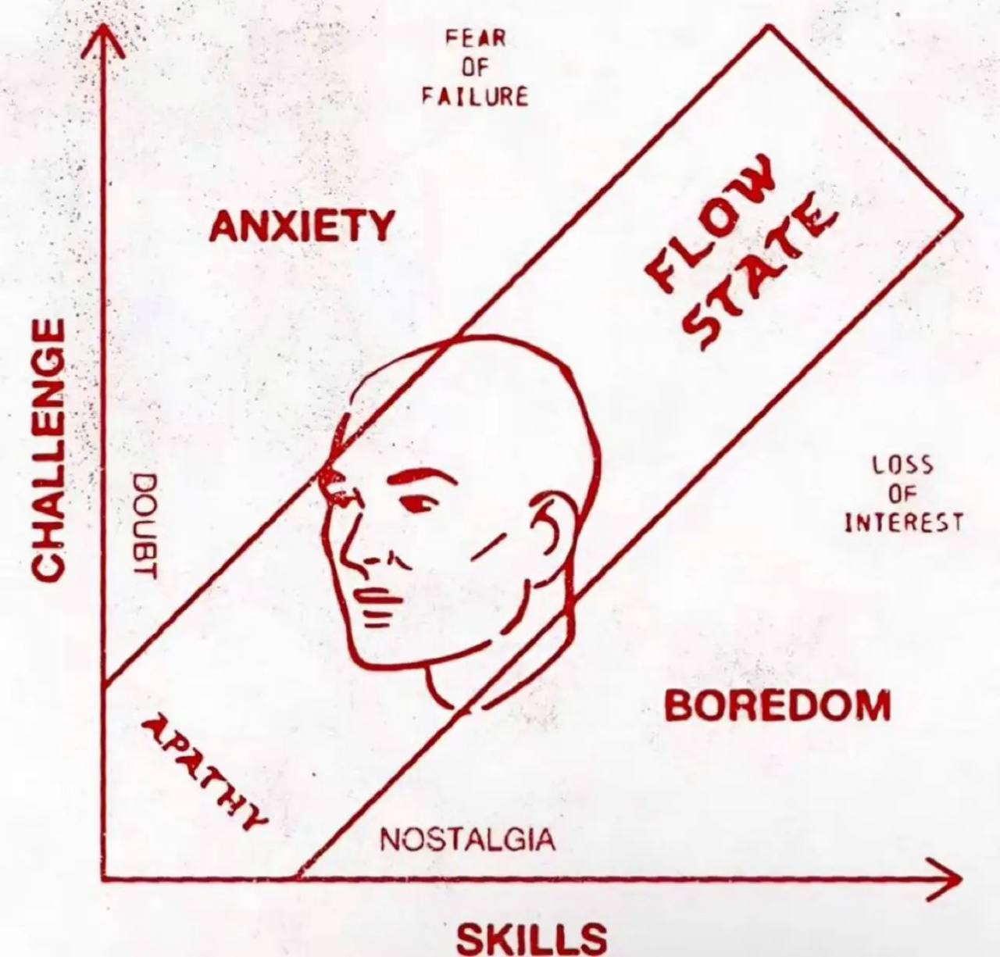
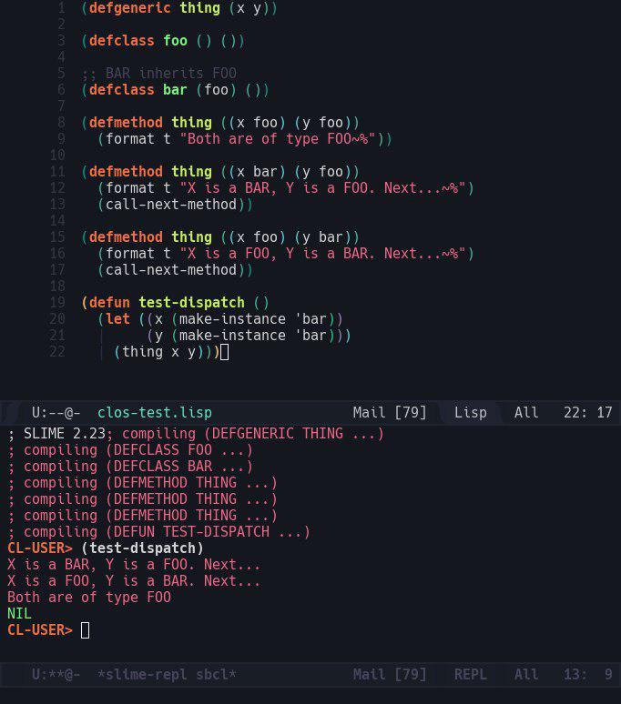

- Dançando No Escuro
- A Vida De Diane
- Luna Papa
- Ninguém pode saber
- O Passado
- Toda Arte é Perigosa (Velvet Buzzsaw)
- Os 27 Beijos Perdidos
- Sonhos
- Dias Vazios
- Edifício Master
- Visual Studio Unit Test (C++)
- A Espiã Vermelha
- Coroutines Em C: Picoro
- Deep Work => Flow
- Compra Me Um Revólver
- Donnie Darko
- Minhas Famílias
- Bicho de Sete Cabeças
- Entre Vinho e Vinagre
- Tolkien
- Star Wars: O Despertar da Força
- The Umbrella Academy
- C Resolve Tudo: Orientação a Objetos (com Polimorfismo)
- C Resolve Tudo Clos
- O Demônio das Onze Horas
- Barcelona
- Aladdin
- Dixit (Jogo)
- Aladdin (2019)
- Alemanha, Ano Zero
- O Castelo de Cagliostro
- Pokemon: Detetive Pikachu
- Albergue Espanhol
- C Resolve Tudo: goto
- Livrando a Cara
- Memórias da Dor
# Dançando No Escuro
Caloni, 2019-05-01 <cinema> <movies> [up] [copy]"Eu gosto de musicais porque nada de ruim acontece em musicais", diz a personagem de Björk. Bom, ela não contava com um musical por Lars Von Trier. Pobre garota.
Esta é a história de uma pessoa ingênua que possui apenas um desejo em sua vida: impedir que seu filho tenha o mesmo destino que ela: ficar cega pelo resto da vida.
Ela é fã de musicais. Nas horas vagas da fábrica, onde trabalha sem parar para economizar para a operação de seu filho, ela ensaia para ser Maria em Noviça Rebelde, mas sua miopia está em um grau avançado. Ela precisa usar os trilhos do trem para chegar em casa. Ela não aceita as caronas de um pretendente que sempre a espera na saída do serviço porque ela não pode se dar ao luxo de ter uma vida. Ela veio da Checoslováquia para a América apenas para operar seu filho.
Este é um filme onde uma comunista cega se sacrifica para salvar seu filho na terra do Tio Sam e ainda é crucificada. Ou seja, para ganhar a Palma de Ouro em Cannes com todos aplaudindo de pé por meia-hora. (Ironias à parte, décadas depois seu diretor deve ter entendido melhor a lógica sócio-polìtica do mundo e declara entender Hitler, virando persona non grata do festival.)
Björk está entregue ao papel, do começo ao fim, mas principalmente no fim. Não preciso dizer para reparar em nada. Apenas olhe para ela. Está em frangalhos, mas resiste sempre que consegue se imaginar em um musical. O mundo te entende. Eu adoro imaginar que estamos encenando para daqui a pouco começarmos a dançar ao som das digitações dos escritórios, das impressoras velozes, das buzinas ferozes.
Lars Von Trier pega uma história específica, mas consegue universalizar em sua mensagem. Não se trata de uma mensagem de injustiça. Como sempre em seus filmes parece que a soma das circunstâncias mais a natureza humana nos levam a conclusões depressivas sobre nós mesmos, mas sempre com uma profundidade admirável.
Peço apenas para prestar atenção no número principal. Um assassinato é cometido. Todos em volta começam a dançar. A combinação de músicas que não rimam, que não animam e portanto são reais, com o absurdo da situação gera uma inversão nunca antes vista na história dos musicais. O que chega mais próximo da realidade é Noviça Rebelde, que pode ser uma comparação inusitada. De qualquer forma é essa a referência usada no filme. Björk é Maria na vida real. Quanta poesia. Coisas que só a tragédia extrema nos entrega na arte.
Mas Von Trier aqui usa parte dos elementos do movimento Dogma iniciado por ele, com pouco uso de pós-produção. A exceção fica por conta das canções. Ele acaba sendo razoável e entende que para tudo há um limite e a mixagem é feita em estúdio, quebrando sua própria regra. Mas sua câmera na mão ao mesmo tempo gera um realismo que se mistura com a arte e assim nos entrega um de seus melhores filmes.
# A Vida De Diane
Caloni, 2019-05-04 <cinemaqui> <cinema> <movies> [up] [copy]A Vida de Diane é um filme de sensações, mas só vamos percebendo isso conforme a rotina se torna cada vez menos relevante para o que é realmente importante. "Precioso", como a própria Diane diz em sua última fala.
Mas o que é isso? O filme não responde porque não há resposta. E isso em um trabalho que fala sobre vício e fanatismo religioso como extremismos semelhantes chega a ser uma ofensa para algumas pessoas, religiosas ou não, já que a história está claramente nos empurrando para um abismo niilista que não pode ser chamado de repugnante porque isso seria supérfluo.
Para fazer o espectador entender essa longa linha de raciocínio iremos acompanhar os esforços de Diane (Mary Kay Place), que próxima da terceira idade observa seus familiares e amigos se indo aos poucos, e uma solidão crescente se materializa conforme ela acompanha a sobrinha com câncer em estado terminal ao mesmo tempo que seus esforços para salvar o filho do vício pela segunda vez soam inúteis.
A esperança da amizade dos velhos amigos surge uma única vez, uma noite fria em uma casa quente, pois assim ela é iluminada pelo diretor de fotografia Wyatt Garfield, que em todas as outras cenas nos entrega uma paleta mais fria e insensível (Garfield é responsável pela beleza inerente de Indomável Sonhadora). O diálogo que se desenrola rapidamente nessa cena demonstra como Kent Jones estabelece com competência o tom humanista de seu filme. Todos presentes querem contar sobre suas vidas, enquanto Diane se limita a se resguardar dentro do seu próprio ser.
Mas já vimos filmes que realizam essa manobra, onde em algum momento há uma explosão da protagonista, e esse não é um filme desses. Fica difícil de defini-lo porque talvez seus realizadores não pensaram na mensagem como algo formatado e pronto para consumirmos, como geralmente é esperado do cinema americano. Quando ouvimos aquelas pessoas dizendo frases completamente comuns para um drama enlatado fica a impressão de estarmos vendo um filme "menor", mas é a presença de Diane nessa rotina que nos faz tentar perceber se há algo mais nesse universo melancólico do final da vida, ou pelo menos o final dos objetivos de uma vida.
A interpretação de Mary Kay Place não é marcante, mas este é um papel injusto, pois é sua própria irrelevância como ser humano que o filme deseja demonstrar. Ela é constantemente lembrada por seus amigos que não está sozinha, mas sua expressão sempre nos diz inconscientemente a verdade oculta, que ninguém deseja mencionar: estamos todos sozinhos nesse mundo.
# Luna Papa
Caloni, 2019-05-04 <cinema> <movies> [up] [copy]Esta é uma comédia russa que vai fazer você pensar várias vezes: mais um dia normal na Rússia.
Estamos na parte oriental, com turbantes, camelos, deserto e malucos de todo gênero. Uma trupe de atores passa pela cidade e um ator deixa um herdeiro, o narrador na história, na barriga de uma moça que adora o teatro.
E o que se segue é um road movie misturado com fantasia e comédia temperados com cultura russa. A atriz que faz essa moça é fantástica. Ela tem uma linguagem corporal que transcende o roteiro. Seu pai e irmão complementam toda a teatralidade da experiência.
Este é um filme que tanto encanta quanto decepciona pela sua teatralidade, pois ao mesmo tempo que a aventura ganha fôlego a cada cena, com o passar da história vai ficando mais claro que seus idealizadores não têm a mínima ideia do que quiseram fazer. É uma narrativa itinerante, que deseja criar cenas memoráveis, mas o cinema não vive de cenas memoráveis se essas cenas não estão conectadas com o sentido que a arte deseja extrair.
Mas filosofias colocadas à parte, Luna Papa diverte bem pela suas quase duas horas de duração, mas pode soar banal se analisarmos a história. Porém, é filme regional da Rússia Oriental. Se você tem poucas oportunidades de ver filmes dessa região do planeta, assista, e ganhe um pouco mais no seu imaginário na coleção das bizarrices russas.
# Ninguém pode saber
Caloni, 2019-05-04 <cinema> <movies> [up] [copy]É com aquela atriz talentosa, apesar de feia que dói. A pegada é ser uma espécie de thriller de espionagem com um pé na realidade. Esse pé é tipo aquele pé tímido sentindo a água fria da piscina. A atriz jovem é linda e uma delícia, motivo pelo qual a série enquadra vários momentos com ela com a câmera por trás e ela de jeans ou close dela bem iluminada e maquiada. Ela interpreta a filha de Tony Collete de um início onde ela não sabe como agir frente a uma ameaça de vida ou morte, passa pela total incapacidade de comprar um carro e vai para "agora sou espiã, roubo cartões de acesso e uso peruca". Este salto gigantesco é marca registrada de uma TV preguiçosa e de certa forma inclusiva demais. Incluir incompetentes não é a diversidade nas artes desejada.
Daí vira mais uma série sobre terroristas fazendo o bem matando capitalistas malvadões.
# O Passado
Caloni, 2019-05-04 <cinema> <movies> [up] [copy]O grande problema quando um relacionamento acaba é que, apesar de tentarmos com sinceridade seguir em frente com nossas vidas, a memória do tempo vivido com a outra pessoa existirá para sempre. Quando Rímini (Gael García Bernal) e Sofia (Analía Couceyro) se separam, mesmo que civilizadamente, algo parece impedir que Sofia aceite essa nova realidade. E este é um filme cuja expressão "peso do passado" realmente se sente.
Apesar da convicção sóbria de Rímini de alguém que mudou o suficiente para não querer mais a vida que tinha, ou embora sua expressão jovem pareça nos dizer que ele não é nada mais que as projeções das loucas que passaram por sua vida, a fotografia sépia de Ricardo Della Rosa denuncia o "peso do seu passado", nos lembrando constantemente que nada mudou, embora acompanhemos de qualquer forma as novas aventuras amorosas do rapaz. (Esta também é uma mensagem dúbia de como os homens são vistos (no filme e pela sociedade) como cães dispostos a trepar sempre que há a oportunidade, e as mulheres como dóceis cadelas prontas para se prender a um macho e chamá-lo de seu.)
Mas enxergado sob o prisma de novos relacionamentos que lembram o velho, o filme de Hector Babenco é mais um retrospecto ao contrário, onde vemos o que ocorre na vida de Rímini depois da separação, mas sempre tendo o passado como um fantasma a persegui-lo, transfigurado através de uma Sofia cada vez mais descabelada e com roupas de quem esteve trancada em casa todo o tempo. Dessa forma, enquanto seu ex se arrasta em direção a novas sensações, nunca o vemos estar de fato satisfeito com sua nova vida, mesmo que ela mude de maneira muito mais dinâmica do que de sua ex-mulher, ao menos como é sugerido em suas breves passagens.
Transformando os prazeres da vida pós-relacionamento apenas como meras tentativas de fuga das lembranças do passado, o roteiro de Babenco e Marga Goes, baseado no romance de Alan Paulis, brinca com isso através de um curioso mal que acomete Rímini em determinado momento, que trabalha como tradutor audiovisual e intérprete, o que não deixa de ser interessante por fazer parte do tema do passado (e o que é o passado senão as memórias que carregamos conosco?). Porém, na maior parte do tempo a narrativa se limita a nos fazer ver as patinadas de Rímini em sua vida de novos amores, colocando seu argumento através do tédio. Uma pena, pois Sofia acaba surgindo em vários momentos não como uma louca, mas um sinal de sanidade em meio às turbulências da vida moderna.
Enfim, há várias interpretações sobre os diversos personagens que vão se introduzindo em uma história que corta rapidamente. Para ter ideia do ritmo do filme, uma cena de sexo corta para a mulher grávida andando preocupada pelo corredor. Outro corte ocorre depois de um táxi inusitadamente partir e o escritório de um advogado. Esses são os flashes que nos recordamos, e apesar de nosso cérebro remontar as lacunas como achar melhor, o passado é uma reconstrução eterna.
O Passado para mim é um filme sobre as loucas e as vadias, como meu amigo sabiamente sempre me ensinou. Há vadias que não são loucas, e são estas que você deve procurar. Já as loucas, mesmo sendo vadias, a longo prazo não compensam. Atravesse a rua, meu chapa, olhe para o outro lado, e entre em um puteiro. Só assim para transformar O Passado em uma agradável fuga das mazelas do cotidiano de uma vida conjugal que já seria vista como loucura se nossa sociedade fosse minimamente sã.
# Toda Arte é Perigosa (Velvet Buzzsaw)
Caloni, 2019-05-04 <cinema> <movies> [up] [copy]Este é o filme-bomba de Jake Gyllenhaal. Ele faz um crítico de arte que está sempre suportando sua cabeça com os braços cruzados, tem uns trejeitos de viadinho mas precisa catar a deliciosa minazinha do Wanderlust (Zawe Ashton) porque pega bem. Esta é claramente uma ficção de quem não entende nada de arte. Eu sou crítico e nunca comi uma gostosa dessas.
A história gira em torno de um desconhecido pintor que teve uma vida conturbada, produziu centenas de quadros que manteve em sua casa para serem destruídos assim que ele falecesse. Ele mora no mesmo prédio dessa gostosa, que resolve explorar a arte póstuma através de uma consultora famosa.
Se você olha por muito tempo os quadros parecem vivos. Sangue foi usado em sua concepção. A ideia, acredito eu, é que sua vida amargurada o fez se vingar de todos em sua vida, e agora esses quadros pretendem se vingar de toda a comunidade de arte (exceto os artistas, então John Malkovich e seu personagem, único minimamente interessante do filme, estão a salvos).
Este é um filme que podemos dizer que tenta criticar a exploração excessiva da arte por abutres que alimentam milionários que não tem mais o que gastar na vida, mas ele confunde assessores por milionários, coloca os quadros assassinos nas suas suntuosas casas e toca o terror.
Além disso, o roteiro manipulador de Dan Gilroy propositadamente torna todos os personagens que vão morrer desagradáveis. Eles se tornam mais insuportáveis conforme estão mais próximos da hora da morte. Claro que alguns desavisados também irão morrer, o que torna toda a história sem sentido.
Gilroy é especialista em criar personagens repugnantes e que mesmo assim conseguimos acompanhar. Em O Abutre, por exemplo, em que Jake Gyllenhaal, aí sim, faz um personagem de respeito, acompanhamos a vida de um repórter que se alimenta e até atua em torno das desgraças dos outros. Eu não sei bem o que aconteceu aqui, mas a cada minuto que Velvet Buzzsaw avança vamos percebendo como uma premissa nada interessante vai se tornando um filme esquizofrênico.
# Os 27 Beijos Perdidos
Caloni, 2019-05-05 <cinema> <movies> [up] [copy]Mais um filme russo dos anos 2k essa semana, filmado na Geórgia, Grécia, Alemanha, falado em russo, inglês, francês. Uma cidadezinha onde as jovens mulheres estão em polvorosa. Para piorar a cidade assiste Emanuelle as mil formas de amar. A única que não pode transar com seu grande amor, um professor de 41 anos, é a jovem Sibylla, de 14 anos. Enquanto isso o filho do professor tem direito a 100 beijos nessa menina, mas perde a chance de dar 27. Sim, a história é confusa desse jeito, além de ir a lugar algum.
Mas esta produção russa tem seu charme cultural. Logo no começo, quando o ônibus chega na cidade trazendo Sibylla ele é bombardeado pelo Tenente que não consegue engravidar sua mulher, a igualmente deliciosa Veronica; o ônibus perde o freio e fica dando voltas na praça para as pessoas descerem. Há metáforas para todos os lados sobre sexo, ou simplesmente sobre a vida, erotizada como em qualquer história com uma lolita que não se importa de ficar pelada onde quer que seja.
Este é um filme cujos acontecimentos servem para belas sequências de ação sem muito motivo de ser e onde a erotização é uma atração, sim, e pode interessar os marmanjos, embora tenha um leve toque de gênero sobre puberdade e paixão juvenil. A bela paisagem ainda serve de recepção a um capitão francês que traz seu barco sem o mar, e mais metáforas sobre o sexo e a vida surgem.
Vibrante sem muita cadência, 27 Beijos Perdidos é daqueles filmes que vai de nenhum lugar a lugar algum, cansa em alguns momentos e em outros entretém. Será que é porque vamos belas mulheres nuas pelo caminho em cenas de sexo calientes como em Emanuelle? Pode ser. Mas estou pensando com a cabeça de baixo.
# Sonhos
Caloni, 2019-05-05 <cinema> <movies> [up] [copy]Assisti a Sonhos, de Akira Kurosawa, dividido em dois. Minha esposa dormiu na metade. Eu avisei para ela que esse cineasta é lento.
As pessoas hoje em dia não têm paciência para observar e contemplar a beleza da composição dos quadros de Kurosawa. E não são apenas os quadros, como a verdadeira pintura dos cenários, do figurino e, principalmente, da imagem que fica em nosso inconsciente ao absorver todas aquelas cores que parecem fazer parte de quadros móveis em ângulos inusitados, mas misteriosamente perfeitos.
O ritmo é lento porque é contemplativo. É algo para parar, observar, refletir, apreender, assimilar. E se modificar no processo.
Em Sonhos o cineasta faz uma ode à natureza e alerta para os caminhos nefastos que a natureza humana está nos levando com os milagres da tecnologia. Pode ser uma argumentação anprim (anarco primitivista) ou, o mais provável, o espírito japonês, que se relaciona tão bem com a natureza. O animador Hayao Miyasaki é especialista nessa mensagem, trabalhos como Ponyo já demonstram, ou até mesmo o jovem clássico Meu Amigo Totoro.
Este é um filme cheio de curtas independentes, mas que se relacionam. No começo um garoto é punido por ver o que não devia: o casamento das raposas. Sua mãe não o deixa mais entrar em casa e ele deve ir se desculpar com elas ou se matar. A analogia cristã do pecado original é óbvia, mas transformada em alegoria japonesa é fabulosa. O ritmo da marcha, o mistério da música das "raposas", é sobrenatural, e ao mesmo tempo tão visualmente completo.
Após ser expulso do "paraíso" o homem começa a ter uma relação doentia com a natureza, cortando árvores de pessegueiro e iniciando guerras. E Kurosawa não deixa por menos, utilizando sua maestria de contador de histórias para tornar a perda de soldados uma tragédia tanto para os que morrem quanto para os que se vêem responsáveis. São momentos fortes que vão compondo a sensação geral de todos nós, humanos, e nossa perda de conexão com o que nos era divino.
Sendo tragicamente profético ao narrar o desastre nuclear que transformará o homem e a natureza em versões demoníacas de si mesmos, Kurosawa não quer apenas nos punir ou nos fazer sermão. Ele, assim como nós, é humano. E seu último sonho acaba sendo algo tão simples que fica difícil ter argumentos para com o velhinho de 103 anos vivendo em um vilarejo que nos faz lembrar dos ensinamentos de Kim Ki Duk em Primavera, Verão..., mas vai além, para o retorno do homem ao seu paraíso.
Este pode ser um diretor de filmes lentos para minha esposa e a juventude eternamente conectada na internet, mas ele nunca será irrelevante. Pelo contrário, quanto mais avança mais se torna óbvio que uma mudança é necessária. Kurosawa mostra aqui sua sugestão de maneira primorosa. Já é um começo.
# Dias Vazios
Caloni, 2019-05-06 <cinemaqui> <cinema> <movies> [up] [copy]Dias Vazios repousa convenientemente no marasmo narrativo da metalinguagem e na filosofia barata de Nietzsche. Não barata no sentido de ordinária, mas no sentido de leitura adolescente sobre o vazio da vida. Aliás, é por isso que Nietzsche é pop: graças ao Super-Homem, e não aquela baboseira de que Deus está morto.
Estreante nas telonas, o diretor e roteirista Robney Bruno Almeida passa dez anos arrecadando fundos para adaptar o livro de André de Leones, Hoje Está Um Dia Morto. O livro é sobre a adolescência e seus sonhos sabotados, vivendo em um fim de mundo sem perspectiva alguma. Leones fez sucesso com seu livro e saiu da cidadezinha onde morava. Agora o filme adaptado realiza a mesma manobra ficcional ao usar Daniel como seu porta-voz.
Daniel (Arthur Avila), assim como os quatro personagens principais deste longa, é um garoto isolado. No recreio ele se mantém escrevendo seu livro na sala de aula. Ele tem asma, mas você só vai ver ele usando sua bombinha de ar uma vez, no início do filme. Até porque essa realidade é a ficção por trás do destino de dois outros alunos, Jean (Vinícius Queiroz) e Fabiana (Nayara Tavares). Jean se matou, e Fabiana, que era sua namorada, é o mistério que Daniel deseja desvendar para finalizar seu livro.
Este é um filme pesado, que bate sempre na mesma tecla depressiva em todos os momentos. Os jovens que vemos são extremamente apáticos e aparentemente só se divertem fazendo sexo, um sexo deprimente como eles. Eles estudam em um colégio católico, o que quer dizer que além de viver em uma cidadezinha do interior de Goiás estão cercados de figuras religiosas, vivas ou não. Isso inclui a Irmã Corina (Carla Ribas), que faz o papel da adulta malvada porque faz entrevistas com os alunos tentando se livrar da culpa de seus destinos (já que os pais, mais safos, já fugiram há muito tempo).
Todos fumam muito nesse filme, e boa parte da história gira em torno do final que Daniel dará para seu livro. Sua namorada, Alanis (Natália Dantas), está inquieta a respeito disso, sugerindo caminhos que Daniel apaticamente descarta. Ela não gosta muito da ideia de que todos morram, pois isso tiraria o significado que Daniel quer trazer para o leitor. Eu concordo com Alanis, pois matar todos os personagens é tão clichê quanto adolescentes depressivos que fumam como uma chaminé. Minha sugestão para Daniel seria de que todos poderiam morrer, mas de câncer no pulmão. Realista e irônico ao mesmo tempo.
Mas não há sequer espaço para ironia com esses personagens, que passam o tempo elucubrando o destino da tal Fabiana. Nós, espectadores, vamos acompanhando a mistura das duas histórias, Daniel/Alanis e Jean/Fabiana. Não é uma mistura em que eles se encontram, mas uma mistura desses personagens: o que gostam, suas falas, seus desejos e suas personalidades. Não há personalidade o suficiente para um Daniel e uma Alanis sobreviverem, mas ainda assim o filme decide compartilhar com Jean e Fabiana.
O resultado não é coerente, pois é mais imaginativo, mas entretém, como todo jogo de metalinguagem. O diretor Bruno Almeida captura com certa competência o marasmo da "Província de Silvana, no Centro-Oeste do Brasil" (assim Daniel nos introduz ao local da ação em seu livro). Se entendermos que estes são os delírios adolescentes de um jovem escritor fica mais palatável de assistir, mesmo que esteja claro que de tantas referências essa história não irá conseguir extrair algo além da experiência da escrita de um livro sobre a própria vida. O que esperar de adolescentes depressivos?
# Edifício Master
Caloni, 2019-05-06 <cinema> <movies> [up] [copy]Esse Eduardo Coutinho sabe fazer documentários. Olhe como ele organiza uma força-tarefa para entrevistar moradores do Edifício Master, que tem cerca de 500 moradores, em frente ao Copacabana no Rio. Ele não apenas encontra histórias interessantes como realiza uma primorosa edição que foca nas histórias e nas pessoas, pura e simplesmente. Não há rodeios. Não dá sono. Dá vontade de viver e conhecer mais pessoas.
Se você já se interessou minimamente por histórias de vida de pessoas que não conhece, como aquelas que se conversa casualmente no ônibus ou no metrô, Edifício Master é uma coleção delas. É começar a assistir e se dar conta que o filme acabou.
Não há cadência, narrativa, linha condutora de história nenhuma. Coutinho está unicamente interessado na miscelânea de pessoas que vivem hoje no condomínio, não importando quando chegaram. É o trabalho documental por excelência. Para se ter uma ideia do caos por trás do filme, no DVD há a opção de assistir em ordem aleatória. Ou seja, não importa a ordem. Toda forma de ver é válida.
O que mais impressiona nos aspectos técnicos é o som. A fala das pessoas soa como dublagem, mas o som da fala é tão nítido, e o silência em volta tão conveniente, que parece ter sido fácil criar este ambiente propício para se ouvir pessoas falando sobre seu passado, seu futuro, suas vidas como eram e como são.
Há pessoas cantando, recitando poesia, tocando. Há todo tipo de etnia e idade, moradores solitários, casais. Não há famílias. Parece que o limite para se morar em um dos apartamentos do Master são duas pessoas. Não como norma, mas como limite de espaço, mesmo.
Coutinho se revela para as câmeras, como uma forma de contar um fiapo de história por aquela decisão de escolher este prédio e estas pessoas. Há breves momentos nos corredores que tentam manter aquela imagem vívida. Funciona.
Além disso, o ponto de vista é sempre dos moradores. Não vemos em momento algum a fachada do prédio. Privacidade? Ou é como as pessoas que vivem há anos, décadas, se comportam no dia-a-dia? Do elevador para o corredor, do corredor para dentro da porta. E somem. Coutinho desencava histórias, com uma cadência que não se revela tão mirabolante para o espectador médio, mas para quem tem alguma ideia de como documentários são feitos, pode imaginar: deu um trabalho do cão. E valeu a pena cada minuto.
# Visual Studio Unit Test (C++)
Caloni, 2019-05-06 <computer> [up] [copy]Desde o Visual Studio 2015 há suporte a unit tests em C++ automatizado na IDE. Porém, a partir do VS 2017 15.5 o suporte aumentou drasticamente, vindo embutidos os suportes para as bibliotecas de teste Google Test, Boost.Test e CTest. Além, é claro, do Microsoft Unit Testing Framework for C++, o caseiro da M$.
Além disso, é possível você mesmo integrar o Visual Studio com outra lib de testes. Mas para que gastar tempo? Várias integrações já estão disponíveis no Visual Studio Marketplace. Ligue já!
OK, parei com o merchan. Até porque não ganho nada com isso. Vamos ao código.
Pelo Wizard do VS podemos criar para um projeto C++ qualquer um projeto de teste. No momento estou vendo os tipos de projeto Native Unit Test e Google Test.
Este é nosso projeto de exemplo:
#include "CalculatorTabajara.h"
int soma(int x, int y)
{
return x + y;
}
int subtrai(int x, int y)
{
return x - y;
}
int multiplica(int x, int y)
{
return x * y;
}
int divide(int x, int y)
{
return x / y;
}
int main()
{
}
Para conseguir testar o projeto principal adicione-o como referência.
Após isso basta incluir algum header que contenha os tipos, funções, classes e métodos que deseja testar e vá criando métodos de teste dentro da classe de exemplo:
#include "pch.h"
#include "CppUnitTest.h"
#include "..\CalculatorTabajara.h"
using namespace Microsoft::VisualStudio::CppUnitTestFramework;
namespace UnitTest1
{
TEST_CLASS(UnitTest1)
{
public:
TEST_METHOD(TestaSoma)
{
int z = soma(3, 2);
Assert::AreEqual(z, 5);
}
TEST_METHOD(TestaSubtracao)
{
int z = subtrai(3, 2);
Assert::AreEqual(z, 1);
}
TEST_METHOD(TestaMultiplicacao)
{
int z = multiplica(3, 2);
Assert::AreEqual(z, 6);
}
TEST_METHOD(TestaDivisao)
{
int z = divide(3, 2);
Assert::AreEqual(z, 1);
}
};
}
Agora abrindo o jogo para você, amigo programador C++ que gosta de saber tudo que ocorre debaixo dos panos:
- Um projeto Unit Test é apenas uma DLL com uns códigos de template.
- Esse código já adiciona a lib de unit test da Microsoft e cria uma classe com exemplo de uso.
- Adicione todo código do projeto original que ele precisa para compilar.
Por isso eu tirei a tranqueira de precompiled header do projeto de unit test, retirei a referência (sugestão do tutorial da Microsoft) e apenas adicionei o mesmo cpp para ser compilado.
Agora mais mágica: se você abrir a janela Test Explorer ele irá encontrar seus testes e enumerá-los!
Se você já programou um pouco em Windows com C++ já deve saber o truque: como o Unit Test é uma DLL ela simplesmente exporta os símbolos necessários para que o Visual Studio encontre o que precisa. O básico que um plugin dos velhos tempos faz: exportar interfaces com um pouco de reflection.

Se você habilitar Undecorate C++ Functions no Dependency Walker verá que ele exporta justamente uma espécie de reflection, na forma de structs:
E se você prestar atenção na ordem de exportação desse símbolos verá que o primeiro se chama GetTestClassInfo. Acabou a magia, não é mesmo?
Os headers e fontes do CppUnitTest ficam em paths do Visual Studio como VC\Auxiliary\VS\UnitTest, nas pastas include e lib. Nele é possível dar uma olhada no significado das macros e das classes disponibilizadas. Logo abaixo das macros, no arquivo principal, é possível ver como funciona o reflection:
namespace Microsoft{ namespace VisualStudio {namespace CppUnitTestFramework
{
struct ClassMetadata
{
const wchar_t *tag;
const unsigned char *helpMethodName;
const unsigned char *helpMethodDecoratedName;
};
struct MethodMetadata
{
const wchar_t *tag;
const wchar_t *methodName;
const unsigned char *helpMethodName;
const unsigned char *helpMethodDecoratedName;
const wchar_t *sourceFile;
int lineNo;
};
struct ModuleAttributeMetadata
{
enum AttributeType { MODULE_ATTRIBUTE };
const wchar_t *tag;
const wchar_t *attributeName;
//...
É uma lib pequena e elegante que permite uma interação não apenas com a IDE, como poderia ser automatizada por um script, uma vez que sabe-se o funcionamento interno e algumas interfaces.
# A Espiã Vermelha
Caloni, 2019-05-08 <cinemaqui> <cinema> <movies> [up] [copy]Política, conspiração, romance, ciência. A Espiã Vermelha é um filme que contém esses elementos unidos por uma mulher vivendo seu sonho na Segunda Guerra em ser uma cientista, mas ao mesmo tempo sendo pressionada por seus valores e sua posição privilegiada a fazer algo que ela poderá se arrepender profundamente. A questão toda do filme é que ela não tem como saber disso naquele momento, e, sendo finalmente descoberta, tem a chance de rever suas ações.
Portanto o roteiro de Lindsay Shapero, inspirada no romance de Jennie Rooney, constrói essa trama alternando entre o presente e o passado. Começamos o filme com Joan sendo intimada pela justiça britânica em um julgamento por traição por seus atos cometidos na época da guerra. Ela é Judi Dench, desperdiçada, pois tem muito pouco tempo de tela e menos diálogos ainda, sendo muito difícil se conectar com o que essa mulher já muito idosa está sentindo a respeito de tudo isso.
Para conseguirmos entender Joan a história se passa na maior parte do tempo no passado, onde ela é interpretada por Sophie Cookson (Kingsman). Ela é uma moça que largou a vida convencional das mulheres da época para estudar ciências exatas na Universidade de Cambridge. Lá ela conhece a extrovertida Sonya (Tereza Srbova) e seu amigo Leo (Tom Hughes), por quem se interessa automaticamente. Ele é alto, bonito e persuasivo em seus discursos. É o principal agitador do grupo que participa de comunistas, e isso em uma época pós-revolução soviética pode lhe trazer vários problemas.
Joan é uma garota convicta de seus valores patrióticos, adora trabalhar com ciência e arruma um emprego no projeto britânico para descobrir a forma de produzir a bomba atômica. Ela assina um termo de confidencialidade e se mantém convicta, apesar da insistência de Leo, que magicamente sempre sabe sobre ela e quer compartilhar o resultado das pesquisas com seus camaradas. Porém, se Leo logo no começo, durante um discurso contra a ditadura espanhola, soa convincente, ele perde tudo isso nas irregulares visitas a Joan, o que faz toda aquela situação soar muito estranha, já que a personagem conduzida por Cookson não nos deixa enxergar esse conflito.
Esta história é um beco sem saída: tanto a Joan do passado quanto a do presente não nos dão informações sobre quem ela verdadeiramente é, mas a história vai se desenrolando mesmo assim com esses três temas principais -- ciência, política, romance -- de maneira burocrática, simplesmente narrando eventos que podem ter acontecido com a "verdadeira" Joan, a espiã Melita Norwood, com nunca se preocupar em desenvolvê-la como um ser humano.
Do ponto de vista político A Espiã Vermelha é um fiapo de história, que não utiliza o precioso momento de tensão entre os países aliados, preferindo falas vagas de pessoas ligeiramente envolvidas. Até o manipulador O Jogo da Imitação se sai muito melhor nesse quesito. Já do ponto de vista científico este é apenas um pano de fundo mal lavado da história, pois não existem detalhes suficiente que instiguem o espectador, mesmo o leigo, a se debruçar sobre os verdadeiros milagres -- moral colocada de lado -- na física atômica.
E, por fim, do ponto de vista do romance, este é basicamente um novelão. Acompanhamos Joan e as visitas irregulares de Leo e sua entrega ou não-entrega física ou dos dados que Leo tanto quer. Em paralelo também acompanhamos o interesse amoroso de seu chefe Max (Stephen Campbell Moore), que coordena todo o projeto e vai desenvolvendo aos poucos o problema de tentar se divorciar de sua atual esposa para viver com Joan. E Sonya, em suas participações igualmente irregulares, possui uma reviravolta tão desbaratinada que quando descobrimos resta apenas haver alguma gravidez no meio da história para ela ganhar o selo novela britânica de curta duração.
Mas não me leve a mal, este é um filme com temas interessantes e uma personagem idem. Eu até gostaria de ter visto mais sobre esses assuntos que giram em torno da figura de Joan, se infelizmente essa não fosse, como ela mesmo se coloca, "uma sombra em meio aos homens". Esse filme tristemente parece a colocar na mesma situação do passado, não fazendo jus à possível homenagem que poderia ter sido feito pelas suas, se não nobres, bem-intencionadas ações da época.
# Coroutines Em C: Picoro
Caloni, 2019-05-08 <computer> [up] [copy]Tantas linguagens hoje em dia tentando implementar a abstração de corrotinas e inserindo mais camadas de abstração (fibras e cereais)... há duas implementações já no Boost, ambas dependendo de uma biblioteca de contexto de stack que é dependente de arquitetura (programada em Assembly).
E aqui está a linguagem C com sua elegância, minimalismo e a filosofia "just works", por mais ou menos 50 anos.
Estava pesquisando sobre bibliotecas de corrotinas em C e encontrei a Picoro, de Tony Finch. O repositório pode ser baixado em git://git.chiark.greenend.org.uk/~fanf/picoro.git. Três coisas me encantaram nela:
1. portabilidade (fácil de testar em qualquer arquitetura).
1. simplificade (um header e um .c com menos de 200 linhas, e a maioria são comentários).
1. manutenção (o último commit é de 2010, ou seja, ninguém mais mexeu nela por nove anos).
Ela é uma biblioteca feita para resolver o problema mais básico de toda corrotina: troca de contexto. Isso é feito de maneira descentralizada, embora ela inicie com uma corrotina principal: a primeira que constrói uma corrotina. A partir dessa é possível criar outras e dar resume em qualquer uma delas que não tenha terminado.
A linguagem C já implementa troca de contexto através das funções padrão `setjmp` e `longjmp`. Há um tipo dependente de arquitetura, `jmp_buf`, que é usado para guardar o contexto. O salto é feito no estilo da função `fork` do Unix, ou seja, não há inclusão de mais nenhuma sintaxe diferente do usual: é um if que retorna 0 (contexto principal) ou não-0 (estamos em outro contexto).
O picoro organiza tudo isso em torno de uma lista ligada. Aliás, de duas listas ligadas: `running` e `idle`, onde o head de cada uma delas é usado para verificar se há corrotinas paradas ou em execução. Há algumas regras básicas para que tudo funcione. Por exemplo, uma corrotina que já foi executada até o final ou que está bloqueada pela chamada de `resume` não pode ser posta para rodar.
Vamos começar com um exemplo simples: apenas um corrotina que recebe um inteiro e incrementa três vezes. A cada vez que ele incrementa ele devolve o controle de execução via yield. O `main` cria três dessas corrotinas e dá resume em cada uma delas três vezes, finalizando a execução de todas. Ao final, o counter final é de 9.
#include "..\picoro\picoro.h"
#include <stdio.h>
void* mycoroutine(void* arg)
{
int* counter = (int*) arg;
(*counter) += 1;
yield(arg);
(*counter) += 1;
yield(arg);
(*counter) += 1;
return arg;
}
int main()
{
int counter = 0;
int i;
coro coroutines[3];
int maxi = sizeof(coroutines) / sizeof(coro);
for (i = 0; i < maxi; ++i)
coroutines[i] = coroutine(mycoroutine);
for (i = 0; i < maxi; ++i)
resume(coroutines[i], &counter);
for (i = 0; i < maxi; ++i)
resume(coroutines[i], &counter);
for (i = 0; i < maxi; ++i)
resume(coroutines[i], &counter);
printf("final counter: %d\n", counter);
return 0;
}
É importante observar que o uso de troca de contexto pode facilmente consumir a pilha, pois ela está sendo compartilhada com muitas funções em paralelo. Para reservar espaço a `coroutine_start` aloca um array de 16 KB (fixo). Esses detalhes de implementação podem ser alterados, pois a biblioteca é tão mínima e simples de entender que construir qualquer coisa em cima dela é trivial.
# Deep Work => Flow
Caloni, 2019-05-09 <self> [up] [copy](Deep Work) => Flow - A proven Path to Satisfaction, de Robin Wieruch, é um resumo valioso de dois livros, um sobre deep work e outro sobre flow, e como ambos se relacionam. Robin é um programador e também leu On Writing Well (ele possui algumas notas sobre essa leitura também).
- Professional activities performed in a state of distraction-free concentration that push you cognitive capabilities to their limit. These efforts create new value, improve your skill, and are hard to replicate.
- Flow can be produced by small things that cause active enjoyment rather than passive pleasure.
- The flow session, that can be supported by deep work, has an impact on our self. The self grows with each challenge and with each opportunity we can improve ourselves as human being. The improvements of the self and the fulfilled activities on the way can lead to a satisfied and meaningful life.
- "The ability to perform deep work is becoming increasingly rare at exactly the same time it is becoming increasingly valuable in our economy. As a consequence, the few who cultivate this skill, and then make it the core of their working life, will thrive."
- Whenever you repeat something, a circuit in the brain will fire oftentimes and strengthen the skill like a muscle in your brain. You improve your self.
- He sees the solution in becoming independent of external rewards. These rewards have to be substituted for internal rewards. For instance, life long learning, achieving worthwhile challenges or the fulfillment in helping others. Only then a human being is in full control of the self. In full control of happiness and sadness.
- You need to use an "arsenal of routines and rituals designed with the science of limited willpower in mind to maximize the amount of deep work". Smart routines make it possible to make less decisions and to do less balancing of different tasks.
- The journalistic philosophy is the last and most advanced philosophy. In that approach you can rapidly switch between shallow to deep work. Yet we know that a disadvantage of multitasking is the usage of our finite willpower. That's why the approach is only for advanced deep workers. Cal Newport says that "it requires a sense of confidence in your work." and that "it requires a conviction that what you are doing is important and will succeed". You can support the philosophy by preparing your deep work schedule in advance. It will help you to preserve your willpower.
- Whenever you are going deep, you have to ritualize it. There are 3 basics to assist your deep work session: time, support and metrics.
- You can operate similar to a business. For instance, imagine a software product that gets an additional feature. The team will come up with a minimum viable product (MVP) for the feature. But the MVP needs planning. A MVP has by definition a minimum yet valuable outcome. The same planning you would need for your own outcome. You have to "identify a small number of ambitious outcomes".
- I can recommend to read the book The One Thing by Gary Keller. It gives a clear guidance how you can deploy short term objectives that contribute to long term goals.
- To track progress enables you to gather feedback about your efforts. Are you on track? Did you have a bad week? Maybe it is time to recalibrate your efforts based on the feedback.
- The attention restoration theory (ART) claims that directed attention is a finite resource. If it exhausts, you will struggle to concentrate. It can be seen quite similar to the finite amount of willpower. The conclusion is that your deep work time per day is limited.
- You need time to rest. Therefore you can deploy productive meditations - that's how Cal Newport calls it - where you do physical work (fitness workout, house cleaning) and no mental work. Apart from that research says that spending time in nature improves your ability to concentrate.
- End your day with a Shutdown Ritual
- the Zeigarnik Effect . It is "the ability of incomplete tasks to dominate our attention". You unconscious mind might help you to solve a problem until your next workday starts (Take a Nap).
- Give your goals a hard deadline that is lesser than your estimated time. The shallow work will become dispensable when you have less time for the task at hand.
- Research shows that a trained memory improves your ability to concentrate.
- The schedule can be used to guide your working day. However you shouldn't forcefully stick to the schedule. It should only guide you, but you can adjust it during the day. It should leave opportunities for improvisation and encourage spontaneity.
- Deep work can be used as a technique to get into a state of flow. The state of flow can be your path in life to accomplish happiness, to be in control of your life and to be independent of social rewards. It can also be your path to accomplish challenges in your professional life.
- Without consciousness we would know what happens around us, but we couldn't give it any value.
- A person can make himself happy regardless of the circumstances surrounding him. It depends on the direction of your attention.
- "After each episode of flow a person becomes more of a unique individual, less predictable, possessed of rarer skills". The self can grow when there is order in consciousness.
- Mihaly Csikszentmihalyi sees enjoyment as another component in our life. Enjoyment, in contrast to pleasure, can generate a flow experience. For instance, you can eat food with pleasure, because it is a need of your body. Or you can eat food with enjoyment. Mihaly takes a gourmet as an example for a person who enjoys to eat. The gourmet understands each ingredient in a meal and can focus attention to its different sensations. It is an accomplishment to bring up the attention and to experience the diversities in a meal.
- It can happen in a competition too. The challenge can be an enjoyment. But only when you concentrate on the activity itself rather than beating your opponent or impressing the audience. The self will grow only when you want to perfect a skill rather than earning external rewards. It is when "the person is paying attention to the activity for its own sake; when it is not, the attention is focused on its consequences".
- The state of flow leaves no space for disorder in consciousness. It removes the awareness of the daily life, your worries and dreams, and you lose the sense of your self. The time in and after the state of flow can be seen as paradox. The self doesn't grow during the flow session itself, but after it.
- The irony is that oftentimes work is easier to enjoy than free time. Activities at work have the conditions to experience flow. Free time on the other hand is unstructured. It is a greater effort to shape it and to find and perform flow activities.
- On a human beings highest potential, a person is able to translate threats into enjoyable challenges. It supports a person to stay in harmony and to live a satisfied life. The word autotelic derives from the Greek words auto and telos which mean self and goal. An autotelic experience describes a self-contained activity. It is an activity solely performed for the intrinsic rewards which strengthens the self. Flow is an autotelic experience.
- When experience is intrinsically rewarding life is justified in the present, instead of being held hostage to a hypothetical future gain."
- "The autotelic individual grows beyond the limits of individuality by investing psychic energy attention in a system in which she is included. Because of this union of the person and the system, the self emerges at a higher level of complexity."
- "Flow drives individuals to creativity and outstanding achievement. The necessity to develop increasingly refined skills to sustain enjoyment is what lies behind the evolution of culture."
- "If you give your mind something meaningful to do throughout all your waking hours, you'll end the day more fulfilled, and begin the next one more relaxed []" by Cal Newport.
# Compra Me Um Revólver
Caloni, 2019-05-10 <cinemaqui> <cinema> <movies> [up] [copy]Compra Me Um Revólver começa com a seguinte premissa: "em um México sem lei, a população diminui porque estão desaparecendo as mulheres". Assistindo ao filme entendemos que o problema populacional não se deve à falta de úteros, mas ao excesso de pênis. Todos sabem que o nível de violência em uma sociedade varia de acordo com a quantidade de pênis disputando território.
A heroína da história e sua narradora é Huck (Matilde Hernandez), uma garota que vive com seu pai cuidando de um campo de beisebol apossado pela máfia local. Ambos estão em um ambiente onde Huck não deveria viver, pois por ser mulher, ainda que criança, ela se torna uma espécie de recompensa para os homens, que de tão poucas fêmeas disponíveis vestem roupas floridas por cima de seus coletes.
Além das roupas estão todos sempre fortemente armados com fuzis, espingardas, pistolas, e as carregam sempre em punho. A noção da realidade de acordo com o diretor/roteirista Julio Hernández Cordón é bem atípica, mas funciona, se considerarmos que há o elemento fantasioso de uma criança nos pincelando os detalhes.
Este é um filme pesado, que nos faz lembrar de como as crianças estão cada vez mais envolvidas em histórias de violência. Isso se deve aos efeitos visuais e sonoros, que impedem que de fato os atores e atrizes mirins tenham contato com a maior parte das atrocidades que vemos na tela, mas ao mesmo tempo soa um sinal de como o futuro pode ser a repetição de um passado que não gostaríamos de ver nunca mais.
Podemos dizer que estamos em um México pós-apocalíptico ou distópico, mas o realismo pode ser brutal como visto no filme. O pai viciado em heroína perde esposa e filha mais velha, sobrando para ele uma única função: proteger a filha caçula. Sabemos que desarmado e trabalhando para uma gangue sempre armada e sem compaixão não é a melhor forma de se proteger, mas por sua condição de dependente entendemos que seu lado covarde o mantém preso nesse pesadelo como um círculo vicioso.
A câmera subjetiva e imediatista de Cordón nos entrega em vários momentos do longa uma experiência lancinante. O momento em que a menina é descoberta por um dos capangas é um exemplo de tensão extrema, mas não é possível esquecer que o filme está a todo tempo usando Huck e suas ações inconsequentes para nos levar para a ação. Quando aprendemos o truque perde um pouco o brilho, mas nunca a tensão.
Em meio ao deserto e uma paleta opressiva de cores, onde até a grama do campo de beisebol não parece assim tão verde por causa do sol castigando a todos, as camadas interpretativas da jovem Huck são o momento que o filme cresce, assim como sua ótima seleção de músicas. Um trompete cospe uma fumaça roxa que inebria o ar. Os mortos espalhados pelo chão viram desenhos com detalhes em vermelho. Os pássaros em torno do rio conferem o ar de redenção da pequena Huck. Há poesia nesses momentos, e é uma pena que apenas pontualmente ela seja usada.
No resto do filme há um tom de estranhamento, mas ele soa apenas incorreto. Um erro de gênero, uma escolha equivocada de quadros. Sua mensagem é um sussurro no deserto para um filme que pede vários gritos de socorro. O que há com aquelas pessoas? O que este mundo se tornou, afinal? Perguntas sem resposta. Resta apenas curtir a música e um ambiente exótico em que a ultraviolência é desumana, mas pior que isso, irracional.
# Donnie Darko
Caloni, 2019-05-10 <cinema> <movies> [up] [copy]Quase 20 anos depois, Donnie Darko é um pequeno milagre dos filmes lado B de baixo orçamento. Com um elenco misteriosamente relevante -- vários atores se tornaram revelações -- e a profunda ideia de chacoalhar a sociedade americana com sua crítica às soluções imediatistas baseadas em pílulas, terapia e auto-ajuda, sua viagem no tempo é a cereja no bolo de uma história que não permite que coloquemos ou tiremos nada, mas que ao mesmo tempo permita tantas interpretações diferentes.
Esta é uma versão dark e distorcida que mistura elementos de De Volta Para o Futuro com Efeito Borboleta, além de ser uma clara inspiração a Beleza Americana, que ganhou o Oscar por ser mais "adulto". Porém, o filme de Kevin Spacey possui em seu pano de fundo a mesma sociedade e a mesma crítica (e, ponto seja dado, foi precursor a Darko). Por ser baixo orçamento, este é um trabalho bem mais solto, e nos leva a de fato questionar o que é está realidade que vivemos, em vez de simplesmente condená-la.
Analise a questão comigo, e veja o que é melhor: um jovem morrer tragicamente em um acidente inexplicável ou seus 28 dias tortuosos e incômodos que se seguem se ele não tivesse morrido? Donnie Darko só nos permite saber dessa pergunta em sua revisita, mas da primeira vez o impacto é sentido de forma inconsciente pela sua música-tema, Mad World (mundo insano), tocada nos momentos finais do filme. Faz refletir ao mesmo tempo que consola. Agora é a hora que você vai no Spotify e dá play nessa música.
O que torna este um trabalho exemplar de Cinema é seu protagonista-título (Jake Gyllenhaal), pelo que ele representa na história. Ele é a peça do quebra-cabeça que não deveria existir, mas que existe mesmo assim, e recebe recados de um agente do futuro que usa uma máscara bizarra de coelho. Esses recados se misturam com ordens de inundar a escola ou queimar uma casa. Ele não sabe por que isso é importante, mas não tem escolha.
Qual a diferença disso para os jovens suicidas que entram armados nas escolas para cometer assassinatos em massa? Não seria Darko uma versão mais palatável dessa vontade ao mesmo tempo insuportável e incontrolável de alguns jovens de por um fim em tudo isso? O filósofo/psicólogo Jordan Peterson descreve em seu livro 12 Rules uma base racional pelo qual eles têm seus motivos para cometer essas atrocidades, como um sentimento auto-destrutivo, mas note que apenas em uma sociedade como a americana se cria ambiente tão propício para um comportamento como esse.
Dada a complexidade alcançada por um filme dirigido de maneira tão despretensiosa e mais focado em seu lado sci-fi, é provável que nem o diretor/roteirista Richard Kelly tenha pensado seriamente no assunto, e como ele nunca mais se destacou no cinema novamente é até plausível (seu último trabalho, o péssimo A Caixa, já tem dez anos). Mas como eu falei no início, se trata de um pequeno milagre ele ter capturado a essência desse tema em detalhes de uma família e comunidade disfuncional que aos poucos se tornarão relevantes para o acontecimento principal.
Porém, o que torna Donnie Darko um trabalho complexo é o seu lado sci-fi. Constituído com um equilíbrio insano mantido durante todo o filme entre pelo menos duas versões da história, ao final podemos concluir com peso igual de probabilidade que esta é 1) a história de uma viagem no tempo que cria um loop temporal incompreensível ou que esta é 2) a narrativa de um garoto esquizofrênico com sérios problemas de auto-controle, e a única cena que nos diz em qual devemos acreditar é a que segue logo depois da música Mad World.
Qualquer adolescente maníaco o suficiente para criar teorias sobre os Smurfs aplaudiria de pé Donnie Darko. O filme ou a pessoa responsável pelos únicos momentos sanos daquela história.
# Minhas Famílias
Caloni, 2019-05-10 <cinema> <movies> [up] [copy]Minhas Famílias é uma pequeníssima janela que o documentarista Hao Wu abre a respeito de sua vida homossexual e a convivência com os pais e com a famíla em geral, chineses tradicionalistas. O lado ruim dele é que não há conteúdo suficiente para valer a pena um longa-metragem, ficando ele no meio do caminhho com seus 39 minutos, e o lado bom é que ele consegue ser sucinto a respeito e evita a todo custo criar um conflito que não existe. As coisas são como elas são. Essa é a mensagem.
Ele decide com seu namorado/marido/esposo ter dois filhos em simultâneo. Ele faz inseminação artifical em duas barigas-de-aluguel em paralelo e nove meses depois eles são pais de duas crianças. Vão mostrar aos pais. Desde sua saída do armário até a decisão de ter filhos, todas as opiniões são capturadas de seus familiares, mas quem brilha mais é sua mãe. De sangue italiano, ela parece ter uma luta interna não apenas com ele, mas com qualquer um que ameace sua família. Ela é a matriarca no sentido clássico da palavra, e seu marido, apesar de também seguir a tradição, quer muito ter um neto de seu único filho homem. Nós conseguimos entender o drama dos dois e compartilhar de sua frustração, e Hao, como cineasta, mas potencial protagonista (afinal, esta é a vida dele) se coloca fora da equação, resultando em um filme parcial.
Essa parcialidade vem do fato que ninguém mais no mundo ocidental em sã consciência debate se homossexualidade é um problema (apenas os ignorantes e fanáticos religiosos, mas danem-se eles). Logo, é natural que ele tenha todos os espectadores do seu lado. É uma decisão inteligente abster-se de defender seu lado, que já foi defendido (e ganho) pelos movimentos LGBTXYZHJKHFIHDKHKHD+. E é muito bom que essa história tenha saído do papel graças à sua coragem de colocá-la em filme. É mais um relato de como a vida pode ser tão simples quanto ela verdadeiramente é.
# Bicho de Sete Cabeças
Caloni, 2019-05-11 <cinema> <movies> [up] [copy]Para comemorar o dia anti-maniconial (que nominho desgraçado) nada como assistir Bicho de Sete Cabeças, que é baseado em um caso real de um jovem internado em um sanatório porque dava uns tapinhas na pantera.
O filme tem cenas de sobra demonstrando o caos da sociedade brasileira conservadora da época. Othon Bastos faz o papel do pai gente direita que quer colocar o filho no eixo. O filho, interpretado por Rodrigo Santoro, é um vida boa, jovenzinho que está aí só curtindo com os amigos. E a mãe, Cássia Kis, é essa submissa padrão que sofre em silêncio.
A falta de comunicação em família é o estopim para uma internação despropositada, junto com a ignorância sobre as drogas, ou pior, a confiança cega no governo para ditar quais as substâncias recreativas que podem ser ingeridas, como calmantes, nicotina e o álcool do dia-a-dia. O sanatório é uma parceria pública e quanto mais loucos para eles melhor. Logo o exame do "doutor" é só ver se o paciente está com o coração batendo.
Este é um filme com atuações ímpares, tanto no casting principal quanto no dos loucos. Mas vendo o making of fica claro de quem é a competência na história. Dirigida por Laís Bodanzky, ela acompanha cada cena com os atores em seus personagens. Ela é a diretora ao mesmo tempo que a câmera. Ela determina o tom de cada cena e seu enquadramento com precisão cirúrgica. Ela teve depois em seu currículo filmes acima da média nacional, como As Melhores Coisas do Mundo e Chega de Saudade.
Não à toa o resultado é um filme tenso que nos dá uma boa noção das consequências nefastas de internar alguém 100% saudável em uma "escola de malucos" como essa. A montagem e a trilha sonora fazem o resto, com seleções de batidas rock pauleira. A fotografia ajuda também, sempre nublada e azulada. A tristeza de um ser humano é não ser compreendido.
A relação entre pai e filho pode ter falhas de comunicação, mas o filme não vilaniza a geração passada, que tem seus motivos de preocupação. A história segue uma pegada biográfica, então alguns detalhes como um romance casual ficam soltos, apenas ilustrando a perda da vida que este jovem poderia ter.
Bicho de Sete Cabeças é uma viagem tão eficiente quanto Um Estranho no Ninho no sentido de olharmos para a natureza da definição do nosso normal. E além disso é um ótimo exemplo de como a impressão de que nossa sociedade está sob ordem e controle é um mero joguete publicitário de quinta categoria. Como as pessoas acreditam ainda nisso?
# Entre Vinho e Vinagre
Caloni, 2019-05-11 <cinema> <movies> [up] [copy]Entre Vinho e Vinagre, ou Wine Country, é uma versão alternativa de Sideways se ele fosse sobre mulheres de meia-idade e seus roteiristas soubesse de antemão que menosprezar uvas pode chacoalhar o mercado de vinhos. Você sabia que por causa que no filme estrelado por Paul Giamatti seu personagem destrata o Merlot por ser "fácil demais de beber", elogia as qualidades do Pinot Noir e os preços dessas uvas na vida real despencam e disparam? Este é o "Sideways Effect" e este é o mundo do vinho, onde qualquer comentário subjetivo de um personagem fictício de um filme pode influenciar um mercado bilionário de gente rica e esnobe.
Mas dessa vez está tudo sob controle, pois a Netflix não cometeria essa gafe com os seus acionistas. Aliás, não apenas está sob controle como as mulheres deste filme viajam para o Vale de Napa, antro sagrado dos vinhos de qualidade americanos, e destratam toda essa frescura por trás de aromas, taninos, história da região e porcentagem de álcool. Ah, e pisam no solo sagrado de plantações de vinhos orgânicos (hilário). E aparentemente elas bebem litros de vinho e em vez de dormir em sono profundo elas ficam super-agitadas e começam a dançar. Não que eu queira algum realismo, cara Netflix, mas você está forçando a barra dos conhecedores do poder do tanino alcoolizado.
A diretora deste filme é Amy Poehler, a pedra fundacional de Parks And Recreation e cineasta wanna-be. Este é seu primeiro longa para o "cinema". A Netflix lançou em alguns cinemas o filme para ganhar este título. Aliás, eles devem fazer isso com todos os títulos para ter a chance de ganhar prêmios. Há ainda um forte preconceito contra as plataformas de streaming pelo mundo esnobe da sétima arte. Assim como o Merlot.
Como diretora, Poehler é eficiente, mas ela pegou o roteiro errado. As roteiristas mulheres do sexo feminino Liz Cackowski e Emily Spivey fazem um trabalho encomendado. Elas são especialistas em comédia, como Vizinhos e Vizinhos 2 (ou Gênios do Crime), além de episódios do próprio Parks & Recreation. Mas aqui falta alma.
A história é básica demais para termos substância: velhas amigas por trabalharem em uma pizzaria juntas, elas milagrosamente conseguem se reunir para o aniversário de 50 anos de uma delas em um fim-de-semana inteiro. A personagem de Poehler (ela está no filme também) perdeu o emprego e está se empenhando um pouco demais no itinerário do passeio que ela planejou e as outras amigas, como pode-se prever, possuem seus próprios problemas e irão colocar para fora em algum momento depois de tanto vinho (ou colocar o vinho para fora, do jeito que elas bebem).
Os detalhes da narrativa não são preenchidos de forma a conhecermos melhor a personalidade de cada uma delas, mas simplesmente jogados em diálogos demais e comédia física de menos. OK, é um filme de mulherzinha, e nem as famosas TPMs do cinema estão aí presentes para um pouco de ação, pois elas já passaram dessa fase. Resta então eu me servir uma taça de vinho, degustar alguns queijos e continuar assistindo elas destratando o atendente do Artesa (não tive o prazer de visitar, mas o local é bonito). Aliás, o product placement aqui é bem sutil, quase imperceptível; vê-se apenas de longe o nome da vinícola, e não é um exagero como Mulheres ao Mar, que parece ter sido patrocinado inteiramente pela companhia do cruzeiro onde Ingrid Guimarães e suas amigas viajam.
Mas divago. Falando sobre a ausência da menstruação de mulheres quase no 5.0, só resta a carência sintomática como a exibida por Val (Paula Pell), que começa a conversar sobre a vida com qualquer estranho que encontre pelo caminho. Como a atendente do restaurante onde vão jantar, Jade (Maya Erskine), que se revela uma artista e que está fazendo sua primeira exibição justo naquele fim-de-semana para seus amigos millenials, em talvez um dos melhores momentos do longa em que a raiva de um grupo de mulheres mais velhas se torna não um ataque ao ego daqueles jovens, mas algo fascinante para ser analisado.
Mas eu gosto da maneira natural com que a história se desenvolve, mesmo que não pareça haver aí uma história. O filme é despretensioso em uma época que todo lançamento quer se tornar o hit do ano. Essa leveza na narrativa que Poehler favorece colocando quadros mais longos e amplos, demonstrando que este não é um encontro tenso, mas agradável com alguma tensão. Há uma diferença. É interessante que a diretora Amy Poehler saiba distinguir e aplicar.
E ninguém falou mal de nenhuma uva específica. Meu diálogo favorito -- porque é bobo -- é este: - "este vinho é sensacional! como se chama?" - "vinho branco".
# Tolkien
Caloni, 2019-05-14 <cinemaqui> <cinema> <movies> [up] [copy]Historicamente falando, podemos dizer que "Tolkien" não é uma biografia sobre o escritor de Hobbit, da saga O Senhor dos Anéis e de Silmarillion. O J.R.R. Tolkien retratado no filme, como os fãs poderão facilmente apontar, é um delírio imaginado por pessoas com pesada carga ideológica. Esta é a explicação mais plausível para esse trabalho censurado, que bloqueia a característica primordial deste autor: sua devoção ao cristianismo. (E isso sem comentar sua postura política extremamente anti-autoritária, tendendo eventualmente ao anarquismo.)
Claro que para os roteiristas David Gleeson e Stephen Beresford, envolvidos em obras que abordam temas como homossexualidade (Orgulho e Esperança, Caubóis e Anjos) ou famílias disfuncionais (The Last of the Haussmans), não é tarefa fácil criar o seu protagonista neste filme, que foi um ser humano, além de intelectualmente admirável, possuidor de uma retidão moral que desafia a podridão do status quo atual. É compreensível que pessoas acostumadas com a destruição da ideia da família tradicional tenham evitado tocar nos detalhes religiosos do autor sobre quem escrevem, além, é claro, de preferir caminhar pelo caminho fácil de mostrar os horrores da guerra como a fagulha que iniciou essa visão de Tolkien sobre o que escreveria anos depois.
A consequência dessa decisão da dupla de roteiristas é descaracterizar completamente o personagem histórico, virando no filme um mero joguete de símbolos. Para conseguir refletir o significado em sua vida pregressa aos livros sobre os valores de amizade e aliança que defendia com tanto afinco, Gleeson e Beresford inventam três outros personagens que serão seus amigos de colégio. Juntos esses quatro jovens são os quatro pequenos "hobbits" que partem para uma jornada que mudaria suas vidas: a criação de uma sociedade literária.
Simplório, mas eficaz. Contudo, a relação entre o universo de Tolkien e sua vida real não é tão simples assim. Para ajudar a construir outros elementos os roteiristas vão compondo de maneira astuta a partir de eventos de outros momentos da história do autor. Eles usam, por exemplo, essa busca incessante de Tolkien pelo seu companheiro no fronte. Sofrendo de febre de trincheira, ele é acompanhado por um fiel soldado chamado Sam, e através de delírios do jovem Tolkien que nos mostram dragões e outros elementos fantásticos pelo horizonte, efeitos visuais ótimos para televisão mas ineficiente para o Cinema, ambos vão "caminhando pela Terra Média". Já não é tão simplório, mas a obviedade da história é de dar sono.
O problema de todo o projeto de "Tolkien" ironicamente começa em querer se inserir após um dos maiores feitos do Cinema de todos os tempos: a trilogia O Senhor dos Anéis, do diretor Peter Jackson. Ainda que mais de 15 anos depois de concluídos, os filmes ainda alimentam nosso imaginário. Se não existissem, o trabalho dirigido por Dome Karukoski se sairia particularmente bem, mesmo com seus efeitos pedestres. Porém, não se pode ignorar o impacto permanente para o público, e nada que pudesse ter sido feito estaria à altura do trabalho de Jackson e suas nove horas de filme.
Ainda assim, nos momentos que o filme se concentra na vida pessoal do escritor ele brilha. É particularmente tocante o momento em que desafiado por sua amiga para criar uma história, Tolkien se recusa a fazer uma narrativa, mas sua descrição de um possível lugar onde existisse algo chamado "cellar door" (a expressão que ele tanto gosta) é sozinha uma narrativa e tanto, e Karukoski realiza as transições entre o momento e o imaginário com extrema competência, através de giros de câmera que lembram o abrir de olhos para uma realidade até então inexistente. Essa magia por trás das palavras do futuro escritor pode ser conferida nessa memorável cena.
Além disso, seu passado como filólogo e a ponte feita entre seus estudos é descrita de maneira maravilhosa pela sua passagem com o Professor Wright, uma atuação memorável de Derek Jacobi (você também pode conferir as habilidades teatrais de Jacobi em Assassinato no Expresso do Oriente). Aliás, muito embora a persona de Tolkien seja feita com extrema desonestidade, conforme comentado, as ligações feitas entre as passagens de sua vida são montadas de uma maneira econômica no roteiro, onde um evento puxa o outro. É nessa característica tão singular de unir os eventos de um trabalho biográfico, que geralmente sofre por ter que sempre se prender em fatos históricos, que "Tolkien" se sai acima da média.
A caracterização cuidadosa do excelente ator Nicholas Hoult (o Nux de Mad Max: Estrada da Fúria) consegue construir um protagonista sem chamar tanta atenção para si, o que descreve com precisão a persona de alguém estudioso vivendo a aventura de sua vida: estudar mais ainda. Uma pena, portanto, que sua atuação não encontre suporte do roteiro, que prefere deixar de lado boa parte da personalidade de Tolkien, o que provavelmente deixará não apenas os fãs religiosos, mas os fãs em geral, particularmente decepcionados com a falta de coragem tão essencial nas obras do autor.
# Star Wars: O Despertar da Força
Caloni, 2019-05-15 <cinema> <movies> [up] [copy]Este reboot praticamente da saga vem com direito a todas as cotas possíveis e imagináveis. Daisy Ridley (mulher: check) faz a jedi que consegue fazer tudo em um episódio, desbancando Luke Skywalker e o resto da galáxia. John Boyega (negro: check) é um ex-stormtropper que possui o tom cômico que a série precisa, mas está cheio de draminhas pessoais e faz questão de envolver todos neles. Oscar Isaac tem essa faceta meio gay (check) e que eleva a ambiguidade entre triângulo amoroso e incesto do filme original para outro nível.
E por falar no original, a aventura é exatamente a mesma de Uma Nova Esperança e um pouquinho de O Império Contra Ataca. O diretor e idealizador desse formato, J. J. Abrams, é especialista em reboots (olhe a maravilha que ele fez em Star Trek). E não podemos dizer que Missão: Impossível 3 não seja um reboot depois do 2 ter destruído esta bela franquia.
Mas este não é um filme sobre histórias, assim como toda a saga Star Wars nunca foi muito boa em narrativas (exceto a trilogia de George Lucas, que realiza um bonito pano de fundo para o universo). Este é um momento em que Star Wars renasce enfatizando seus valores mais preciosos: a força de fazer o que é certo porque é certo. E nós veremos isso em seu estado da arte na sequência, Os Últimos Jedi, o melhor filme de toda a saga do ponto de vista de aventura.
Mas voltando aos valores, o roteiro escrito a seis mãos (incluindo Abrams) constrói uma nova fábula reciclada de Luke através da catadora de lixo Rey (Daisy) em uma época muito tempo depois de O Retorno de Jedi, em que Luke Skywalker e os jedis se consolidam como uma lenda, algo já explorado no último filme da trilogia original, em que o androide C-3PO ajuda a espalhar a palavra pela galáxia. Estamos em um período que o Império começa a crescer de novo com um outro nome (alegoria política: check) e que desenvolveu um canhão capaz de dizimar vários planetas de uma vez (estrela da morte: check) e que tem uma falha em um local específico onde os pilotos da Resistência podem acertar (falha na estrela da morte: check). Há um evento catártico no final que envolve a morte de um personagem e com isso a ação consegue ser desenvolvida por duas horas e meia sem cansar.
O filme é muito bem feito, especialmente as cenas de ação. A cartilha SW está sendo seguida à risca, com cortes antigos, letreiro inicial e todo o fan service que se espera de uma franquia como essa. É previsível, esperado e inevitável que o primeiro filme que não é controlado pelo idealizador da série, George Lucas, contivesse tantos elementos repetidos, que soam como um remake ou homenagem bem intencionados. Ou podemos refletir um pouco mais e chegar à conclusão comercial que, do ponto de vista dos fãs, faz todo o sentido abraçar os três filmes clássicos, agora sob as asas de uma fabricante de franquias com o maior pedaço de mordida nos cinemas que é a Disney.
Mas essa repetição gera estranhamento a cinéfilos atuais. "Star Wars: O Recomeço" continua mostrando, pela enésima vez, o letreiro flutuante que foi por muito tempo símbolo do pop artístico e uma marca cult dos excitantes anos 70 a 90. Porém, diferente dos créditos iniciais sempre iguais dos filmes de Woody Allen -- previsível, monótono e charmoso -- aqui temos um resquício jurássico que hoje, incríveis quase quarenta anos depois, parece simplesmente um recurso brega aplaudido por gerações que aprenderam que ser nerd, quase como uma receita de bolo, é assistir a esses filmes no espaço e acreditar ingenuamente que seus valores na vida real fazem parte da eterna luta da Resistência contra o Império.
Mas apesar das referências, homenagens e cópia descarada, o roteiro cria uma estrutura coesa, fluida, e até dramática, mesmo sem apresentar essencialmente nada de novo. O resultado é tenso e ritmado e abraça os dois primeiros primeiros filmes originais, o que é algo compreensível do ponto de vista afetivo. Porém, obrigar-nos a ver pela terceira vez uma Estrela da Morte -- ou o que o valha -- mesmo que introduzida com um dos melhores efeitos do filme, é talvez pedir um pouco demais.
Mas se há algo de verdadeiramente novo neste filme, e isso não deixa de ser irônico, são os efeitos visuais. Diferente da nova trilogia 1999-2005, que abusava sem critérios do digital, aqui há uma mescla inspirada que consegue trazer o "realismo" da trilogia clássica. Além do mais, o músico John Williams acerta mais uma vez o tom nesse seu sétimo trabalho junto à série, criando uma trilha sonora nova que pertence ao mesmo universo. É graças a Williams que não precisamos fazer uma lavagem cerebral para tirar o tema clássico da cabeça, já que este é usado de maneira econômica e inteligente, apenas nos momentos que cenas e referências clássicas são evocadas (ainda assim, não deixa de ser sua melhor tirada a marcha imperial em um crescente sutil e ao mesmo tempo presente durante os episódios I e III). Ainda no aspecto técnico, talvez a maior decepção seja o novo Lord, o Líder Supremo Snoke. Interpretado por Andy Serkis por captura de movimento, sua figura animalesca pode tentar evocar o mal encarnado, mas dificilmente as expressões de Serkis fogem do óbvio e do já encontrado em sua interpretação de Gollum no Senhor dos Anéis.
E se o que pareço fazer neste texto são mais e mais comparações com os filmes anteriores, não é de forma gratuita. O Despertar da Força pede a todo o momento essa comparação, trazendo planetas e raças recorrentes, e, talvez o pior, os próprios personagens da saga original, sempre tentando se levar pela inércia de seu universo. Felizmente, o resultado está sempre à altura, nunca decepcionando nem fã nem cinéfilo (se desapontar, será pela falta de novidade).
Porém, se a decisão de trazer de volta Hans Solo (Harrison Ford), princesa Leia (Carrie Fisher) e Luke Skywalker (Mark Hamill) pode parecer puro marketing, o terceiro ato do filme faz valer a pena essa ressurreição, pois pelo menos duas reviravoltas, uma tensa e outra empolgante, que já entram na coleção de melhores momentos da série, só são possíveis graças aos elementos resgatados por suas personas. Obviamente ambos os momentos têm relação com o icônico sabre de luz (que aqui parece tomar forma mais científica sem entrar em detalhes embaraçosos, como tentou George Lucas na nova trilogia), e, sem querer estragar a surpresa, com pelo menos um momento já repetido da saga.
Terminando obviamente com abertura para infinitas continuações, mas felizmente entregando um desfecho satisfatório (diferente dos trabalhos com super-heróis ultimamente), O Despertar da Força está longe de ser memorável e mais longe ainda de ser original, mas nem por isso não se estabelece como um exemplo à altura do universo. Que a força esteja com J.J. Abrams!
# The Umbrella Academy
Caloni, 2019-05-15 <cinema> <series> [up] [copy]Estava assistindo The Umbrella Academy e lá pelo terceiro episódio tive uma ideia genial: assistir já o último. A ideia para um crítico de cinema como eu é clara: não há nada que seja desenvolvido nos episódios intermediários que não será citado ou terá referências no season finale, e se houver não importa tanto assim. Tempo economizado, pretendo fazer isso com todas as séries se o começo não tiver indícios de que o resto seja acima da média.
Para seguir essa dica, imagine o seguinte: prestando atenção em uma série como em um filme é possível obter todas as informações relevantes em seus primeiros 10 minutos (assim como em um filme). Esta técnica apenas não é recomendada para quem for assistir a série como novela, se identificar com os personagens -- como eu fiz no ótimo Sense8 -- o que me lembra que séries são, sim, novelas glorificadas, já que é nossa identificação com os personagens que permite que vejamos infinitos episódios sobre o mesmo universo. Eu iria até além e encaixaria as séries de filmes, como os da Marvel, Star Wars. Quem diria que Vingadores é a novela mais cara produzida na história do Cinema?
Outro motivo para não seguir essa fórmula é para séries que merecem sua atenção, caro leitor que valoriza seu tempo. Por exemplo, em Breaking Bad, a história de um professor de química que vai se transformando aos poucos em um chefe de máfia é sobre o processo. Então mesmo que você "perca" alguns episódios o processo é valioso. Merece ser assistido do começo ao fim. E mais de uma vez, já que você economizou seu tempo evitando de ver séries bostas por inteiro.
Outra exceção fica por conta de séries cujos episódios são relativamente independentes e que você pode assistir em qualquer ordem, como South Park e Rick & Morty para animações, ou até Easy por ser breve e que foge do padrão, e, claro, Sherlock, tanto por ser independente e pela sua qualidade narrativa que instiga o espectador.
Mas voltando à série: é descartável. Uma série de heróis da Netflix criada a esmo, embora ela se desenvolva de uma maneira curiosa, unindo o realista com o bizarro. E selecionando músicas para suas cenas como dificilmente vemos por aí. A morte de um bilionário excêntrico que foi o pai adotivo de sete crianças nascidas misteriosamente de mulheres que não estavam grávidas até o momento do parto é o estopim para o luto de todos não pelo pai, mas por um passado que os transformou no que não gostariam de ser. Todos possuem arrependimentos em Umbrella Academy. Alguns no passado, outros no futuro. Sim, porque seis desses sete jovens possuem poderes especiais (daí parecer uma série de heróis). Seis menos uma: a interpretada por Helen Page, uma garota que toca violino e parece saber ou pensar mais do que ela diz. Ela pode ser nossa testemunha ocular por estar de fora e também por ter traído o grupo ao publicar um livro biográfico expondo toda a família.
Está vendo como pular para o final é muito melhor?
# C Resolve Tudo: Orientação a Objetos (com Polimorfismo)
Caloni, 2019-05-17 <computer> [up] [copy]Como programadores há um vício em nossas cabeças que é estar constantemente buscando a bala de prata, ou seja, a solução final e única para todos os nossos problemas de implementação. Com o tempo e alguma experiência descobrimos que tal coisa não existe, mas até lá nos encantamos com esse ou aquele framework, e claro, com essa ou aquela linguagem.
As linguagens que são criadas depois da revolução dos computadores pessoais querem facilitar a vida do programador médio embutindo soluções já testadas por programadores de verdade e evitando a todo custo que o código incorra em erros comuns. Além disso, há movimentos nas comunidades e no mercado que geram tendências que influenciam essas linguagens, o que explica design patterns, orientação a objetos, programação funcional, xp, scrum, devops e qualquer outra bala de prata que vá se solidificando.
Expliquei tudo isso para chegar no tema deste artigo: você pode fazer tudo isso usando linguagem C.
Mas aí você deve estar se perguntando: "supor que uma linguagem resolve tudo não é estar defendendo também uma bala de prata?". A resposta é sim e não. Sim, é uma bala de prata se você pensar que pode fazer do zero sites e interfaces gráficas modernas em C puro. Mas a resposta também é não porque eu estou trabalhando em uma outra camada, aquela em que as soluções que ficam pra sempre são implementadas. Estou falando de pensar sempre na linguagem C quando estiver interessado no funcionamento das outras soluções.
Esse mindset propost tem como objetivo impedir que você pense que as outras soluções são mágicas porque se você consegue pensar em C ela é real. Se tem algo que a linguagem C não é esse algo é mágica. C é uma simples abstração de uma máquina virtual que se relaciona de maneira muito íntima com as implementações em assembly de várias arquiteturas. Mágica é algo que te impede de enxergar em que momento uma solução se encontra com o hardware. C nunca irá te impedir de fazer isso.
Dito isto, vamos analisar algumas balas de prata e entender como em C isso é implementado para revelar a mágica.
Orientação a Objetos
A Orientação a Objetos se divide em algumas features. Algumas não vale a pena falar aqui, como tratar tudo como objeto. C já faz isso através de structs. Você pode montar uma struct que possua métodos, inclusive, através de ponteiros para função. E esses métodos já são sobrecarregáveis e virtuais.
struct MyClass
{
int x, y;
void (*method)(int);
};
void method(int x)
{
}
struct MyClass NewMyClass()
{
struct MyClass ret = { 0, 0 };
ret.method = &method;
return ret;
}
int main()
{
struct MyClass obj = NewMyClass();
obj.method(10);
}
A sobrecarga se torna algo trivial, bem documentada através dos nomes das funções que você está chamando. Tudo fica às claras, nada implícito, nada disse que me disse. Se eu chamo um método NewMyClass2 é óbvio que estou construindo uma segunda versão baseada na primeira, e posso inclusive comparar para ver se os métodos são originais ou sobrescritos com `obj.method == &method`, por exemplo. Além disso, é possível realizar composições de tipos onde alguns métodos são sobrescritos enquanto outros são compostos por chamadas duplas, triplas. Não há qualquer limitação ao polimorfismo exceto o que você define.
struct MyClass
{
int x, y;
void (*method)(int);
};
void method(int x)
{
}
struct MyClass NewMyClass()
{
struct MyClass ret = { 0, 0 };
ret.method = &method;
return ret;
}
void method2(int x)
{
}
struct MyClass NewMyClass2()
{
struct MyClass ret = NewMyClass();
ret.method = &method2;
return ret;
}
int main()
{
struct MyClass obj = NewMyClass2();
obj.method(10);
}
Os métodos são "estáticos" por default (não há contexto), o que aliás facilita programação funcional, mas você pode buscar contexto onde te interessa, passando como parâmetro toda a "classe", seja por valor ou referência, ou passando até uma versão parcial dela. Há inúmeras maneiras de construir um objeto em C, pois ele não está restrito às regras de sintaxe da definição da linguagem, uma vez que é você que define. Além disso, como você deve ter percebido, para declarar tipos de structs é necessário o uso dessa palavra-chave, mas a linguagem C já possui um sistema de typedef para trocar convenientemente qualquer definição de tipo como um nome único.
#include <stdio.h>
typedef struct SCalc
{
int (*sum)(int, int);
int (*mult)(struct SCalc*, int, int);
} Calc;
int calc_sum(int x, int y)
{
return x + y;
}
int calc_mult(Calc* calc, int x, int y)
{
int ret = 0;
int i;
for( i = 0; i < x; ++i )
ret = calc->sum(ret, y);
return ret;
}
Calc CalcNew()
{
Calc calc;
calc.sum = &calc_sum;
calc.mult = &calc_mult;
return calc;
}
int main()
{
Calc calc = CalcNew();
int x = 10, y = 32;
int z = calc.sum(x, y);
int k = calc.mult(&calc, z, y);
printf("%d + %d = %d, %d * %d = %d\n", x, y, z, z, y, k);
}
10 + 32 = 42, 42 * 32 = 1344
Note que podemos ao redefinir a função de soma a de multiplicação também é alterada, mesmo não alterando seu funcionamento (mas alterando uma função que ela usa).
#include <stdio.h>
#include <stdlib.h>
typedef struct SCalc
{
int (*sum)(int, int);
int (*mult)(struct SCalc*, int, int);
} Calc;
int calc_sum(int x, int y)
{
return x + y;
}
int calc_mult(Calc* calc, int x, int y)
{
int ret = 0;
int i;
for( i = 0; i < x; ++i )
ret = calc->sum(ret, y);
return ret;
}
Calc CalcNew()
{
Calc calc;
calc.sum = &calc_sum;
calc.mult = &calc_mult;
return calc;
}
int calc_cat(int x, int y)
{
char buf[100];
int ret;
sprintf(buf, "%d%d", x, y);
ret = atoi(buf);
return ret;
}
Calc BizarreCalcNew()
{
Calc calc = CalcNew();
calc.sum = &calc_cat;
return calc;
}
int main()
{
Calc calc = BizarreCalcNew();
int x = 1, y = 1;
int z = calc.sum(x, y);
int k = calc.mult(&calc, z, y);
printf("%d + %d = %d, %d * %d = %d\n", x, y, z, z, y, k);
}
10 + 32 = 1032, 1032 * 32 = 2147483647
Este é apenas um exemplo besta de polimorfismo, além de um exemplo trivial de como OO em C é infinitamente mais rico e mais complexo. Está nas mãos do programador definir até onde vai a solução proposta. E é bom saber que não existe bala de prata.
# C Resolve Tudo Clos
Caloni, 2019-05-17 <computer> [up] [copy]Continuando nossa série, conforme sugerido pelo @colemaker do grupo C/C++/42/Império do Brasil, a próxima ideia a ser implementada em C é o sistema polimórfico de chamadas do Lisp orientado a objetos. Esse sistema permite realizar a seguinte manobra:
O aspecto-chave aqui, conforme eu descobri, é implementar a estratégia de prioridades entre as sobrecargas dos métodos de acordo com os tipos passados. Analisando bem por cima devemos sempre priorizar os métodos com os tipos mais específicos e ir realizando underpromotion até chegarmos no menos específico (se houver).
Sistema de tipos
Para o sistema de tipos em C nada como fazer do zero:
/* defclass(foo, cclass_instance); */
typedef struct foo_instance { cclass_instance type; } foo_instance;
static foo_instance foo = { "foo" };
/* defclass(bar, foo); */
typedef struct bar_instance { cclass_instance type; } bar_instance;
static bar_instance bar = { "bar" };
Estruturas de dados
~~As estruturas estão usando STL. O quê? Mas não era C? Sim, você tem toda razão. Porém, estou usando uma lib mais conhecida. Há milhares de libs containers em C para você escolher para trocar a implementação. Lembre-se que o mais importante não é ser purista, mas atingir os objetivos. Como eventualmente veremos nessa série de artigos, o próprio C++ e toda a sua biblioteca pode ser implementada em C. Este é apenas um atalho para fins didáticos e de produtividade (como eu já falei, produtividade não é o foco aqui, mas enxergar por debaixo dos panos).~~
Inicialmente feito em STL pela produtividade, a solução atual no GitHub é feita inteiramente em C usando a glib (lib comum em Linux com estrutura de dados, etc). O legal dessa biblioteca é que ela tem 20 anos (desde 1998) e já foi muito usada e testada, além de possuir estruturas e algoritmos simples que fazem parte do pacote básico de qualquer programador, como arrays, strings, hash tables.
#include "cclos.h"
#include <stdarg.h>
#include <string.h>
#include <gmodule.h>
typedef GPtrArray Argv;
typedef struct _Method
{
void* fun;
Argv* argv;
} Method;
typedef void (*FP_Argv0)();
typedef void (*FP_Argv1)(cclass_instance*);
typedef void (*FP_Argv2)(cclass_instance*, cclass_instance*);
typedef void (*FP_Argv3)(cclass_instance*, cclass_instance*, cclass_instance*);
typedef GHashTable ClassMap;
typedef GPtrArray Methods;
typedef GHashTable MethodMap;
static ClassMap* g_classes;
static MethodMap* g_methods;
static Methods* g_calledMethods;
void cdefgeneric_initialize()
{
g_classes = g_hash_table_new(g_str_hash, g_str_equal);
g_methods = g_hash_table_new(g_str_hash, g_str_equal);
}
Method* method_new(void* fun, Argv* argv)
{
Method* ret = (Method*)malloc(sizeof(Method));
if (ret)
{
ret->fun = fun;
ret->argv = argv ? argv : g_ptr_array_new();
}
return ret;
}
Argv* method_free(Method* method, gboolean free_seg)
{
Argv* ret = free_seg ? g_ptr_array_free(method->argv, TRUE), NULL : method->argv;
free(method);
return ret;
}
const char* defclass(const char* name, const char* deriv)
{
gboolean insertOk = g_hash_table_insert(g_classes, (gpointer*)name, (gpointer*)deriv);
return name;
}
#define extractargv(argv, argc) \
va_list vl; \
va_start(vl, argc); \
for (int i = 0; i < argc; ++i) \
{ \
cclass_instance* arg = va_arg(vl, cclass_instance*); \
g_ptr_array_add(argv, arg); \
}
void defmethod(const char* name, void* fun, int argc, ...)
{
Method* method = method_new(fun, NULL);
Methods* methods = (Methods*)g_hash_table_lookup(g_methods, name);
extractargv(method->argv, argc);
if (!methods)
{
methods = g_ptr_array_new();
g_hash_table_insert(g_methods, (gpointer) name, (gpointer) methods);
}
g_ptr_array_add(methods, method);
}
void callmethod(const char* name, Method* method)
{
g_ptr_array_add(g_calledMethods, (gpointer) method->fun);
cclass_instance** argv = (cclass_instance * *)method->argv->pdata;
if (method->argv->len == 0)
{
FP_Argv0 fun = (FP_Argv0)method->fun;
fun();
}
else if (method->argv->len == 1)
{
FP_Argv1 fun = (FP_Argv1)method->fun;
fun(argv[0]);
}
else if (method->argv->len == 2)
{
FP_Argv2 fun = (FP_Argv2)method->fun;
fun(argv[0], argv[1]);
}
else if (method->argv->len == 3)
{
FP_Argv3 fun = (FP_Argv3)method->fun;
fun(argv[0], argv[1], argv[2]);
}
}
Method* find_method_by_fun(const char* name, void* fun)
{
Method* method = NULL;
Methods* methods = (Methods*) g_hash_table_lookup(g_methods, name);
if (methods)
{
Method** meths = (Method**)methods->pdata;
guint i = 0;
while (i < methods->len)
{
Method* m = meths[i];
if (m->fun == fun)
{
method = m;
break;
}
++i;
}
}
return method;
}
int calcdistance_arg(cclass_instance* arg, cclass_instance* underpromo)
{
int ret = 0;
char* promo = (char*)arg->type;
while (strcmp(promo, underpromo->type) != 0)
{
promo = (char*)g_hash_table_lookup(g_classes, (gpointer*)promo);
if (!promo || strlen(promo) == 0)
{
ret = -1;
break;
}
++ret;
}
return ret;
}
int calcdistance(cclass_instance** args, cclass_instance** underpromo, int len)
{
int ret = 0;
for (int i = 0; i < len; ++i)
{
int dist = calcdistance_arg(args[i], underpromo[i]);
if (dist == -1) return -1;
ret += dist;
}
return ret;
}
void call_next_method(const char* name, int argc, ...)
{
Method* method = method_new(NULL, NULL);
extractargv(method->argv, argc);
int nextdist = 666;
Methods* methods = (Methods*)g_hash_table_lookup(g_methods, name);
if (methods)
{
guint i = 0;
while( i < methods->len )
{
Method* m = ((Method * *)methods->pdata)[i];
gboolean alreadyCalled = FALSE;
guint cms = 0;
while (cms < g_calledMethods->len)
{
void* fun = ((void **)g_calledMethods->pdata)[cms];
if (fun == m->fun)
{
alreadyCalled = TRUE;
break;
}
++cms;
}
if ( ! alreadyCalled)
{
int dist = -1;
if (method->argv->len == m->argv->len)
dist = calcdistance((cclass_instance * *)method->argv->pdata, (cclass_instance * *)m->argv->pdata, method->argv->len);
if (dist >= 0 && dist < nextdist)
{
if (dist < nextdist)
{
method->fun = m->fun;
nextdist = dist;
}
}
}
++i;
}
if (method->fun)
callmethod(name, method);
}
}
void call(const char* name, int argc, ...)
{
g_calledMethods = g_ptr_array_new();
Method* method = method_new(NULL, NULL);
extractargv(method->argv, argc);
int nextdist = 666;
Methods* methods = g_hash_table_lookup(g_methods, name);
if (methods)
{
guint i = 0;
while( i < methods->len )
{
Method* m = ((Method * *)methods->pdata)[i];
int dist = -1;
if (method->argv->len == m->argv->len)
dist = calcdistance((cclass_instance * *)method->argv->pdata, (cclass_instance * *)m->argv->pdata, method->argv->len);
if (dist >= 0 && dist < nextdist)
{
if (dist < nextdist)
{
method->fun = m->fun;
nextdist = dist;
}
}
++i;
}
if (method->fun)
callmethod(name, method);
}
method_free(method, TRUE);
}
O código é bem simples. Mapas e listas com strings e ponteiros para organizar as estruturas por detrás do sistema de tipos que estamos implementando e seus métodos sobrecarregados. Cada método possui um nome, um endereço de ponteiro e o número dos seus argumentos. Todos os argumentos são do tipo polimórfico, seguindo o que provavelmente existe por detrás da própria implementação do Lisp.
Main
O código que utiliza a clos.c é bem direto e enxuto. Como no Lisp.
#include "cclos.h"
#include <stdio.h>
/* defclass(foo, cclass_instance); */
typedef struct foo_instance { cclass_instance type; } foo_instance;
static foo_instance foo = { "foo" };
/* defclass(bar, foo); */
typedef struct bar_instance { cclass_instance type; } bar_instance;
static bar_instance bar = { "bar" };
void test_dispatch()
{
bar_instance x = bar;
bar_instance y = bar;
call("thing", 2, &x, &y);
}
void thing_foo_foo(cclass_instance* x, cclass_instance* y)
{
printf("Both are of type FOO\n");
}
void thing_bar_foo(cclass_instance* x, cclass_instance* y)
{
printf("X is BAR, Y is FOO. Next...\n");
call_next_method("thing", 2, x, y);
}
void thing_foo_bar(cclass_instance* x, cclass_instance* y)
{
printf("X is FOO, Y is BAR. Next...\n");
call_next_method("thing", 2, x, y);
}
int main()
{
cdefgeneric_initialize();
defclass("foo", "cclass");
defclass("bar", "foo");
defmethod("thing", &thing_foo_foo, 2, &foo, &foo);
defmethod("thing", &thing_bar_foo, 2, &bar, &foo);
defmethod("thing", &thing_foo_bar, 2, &foo, &bar);
test_dispatch();
}
Futuros posts sobre C Resolve Tudo poderão utilizar a glib ou qualquer outra. Uma outra vantagem da linguagem C é que sua biblioteca padrão é muito enxuta, sendo fácil de ter disponível em seu ambiente um compilador C com a clib, e em cima dela você pode utilizar qualquer biblioteca de sua escolha para estruturas e algoritmos mais complexos. Ou fazer a sua própria.
# O Demônio das Onze Horas
Caloni, 2019-05-17 <cinema> <movies> [up] [copy]Godard coloca em prática seu objetivo de destruir a linguagem cinematográfica porque é coisa de burguês, mas seu jeito mimado e francês de criticar o establishment vira um tiro pela culatra em filme chato que apenas enfatiza que crianças como ele devem ser mantidas longe da câmera.
A história é um homem que se casou com uma italiana rica (mas não liga pra ela) e decide fugir com a amante em uma versão pastelão dos filmes de ação dos anos 60. Eles brincam, correm, dizem coisas de esquerdinha como "não ligo pra dinheiro" e chegam à conclusão que esta é uma vida de merda não importa o que você faça.
Mas para chegar nesse nível nós espectadores somos obrigados a assistir às infantilidades de um cineasta sem controle. Não que seja sem aviso: a primeira cena do filme é de um homem lendo para sua filha um trecho de um livro sobre arte moderna. Ao saber disso o espectador poderia já fugir da sala. Correndo.
Esse nonsense do filme com roubos patéticos de carro ou golpes infantis em turistas americanos deveria ser engraçado. Talvez até seja se você for francês. Mas hoje é apenas um porre. Não há identificação com essas caricaturas que o filme promove. E a referência todo momento ao Vietnã é gratuita, pois não se liga a nenhuma parte da história.
O que no fundo Godard está fazendo é a sua teoria e versão do que deve ser feito no cinema: linguagem de guerrilha. A base para isso é que a linguagem que determina sua crítica. Então ele nos mostra como uma narrativa convencional é patética, com erros de lógica e continuidade dentro do controle narrativo. É um filme ruim porque o cineasta quer que assim o seja, para mostrar como a arte burguesa é de fato, mas para isso a fabrica desprovida do que a torna excelente: comunicação, onde coerência é fundamental.
No fundo a esquerda não consegue lutar contra o sistema, sendo suas tentativas de contracultura enfadonhas. Eu sei, o objetivo é mostrar como cinema é enfadonho. Ou a vida burguesa. Mas e a vida aventureira do casal não é divertida? Acho que me perdi na tradução. Não importa, este Godard de 65 é tão irrelevante que filmes ruins feitos sem querer entram no mesmo patamar.
# Barcelona
Caloni, 2019-05-18 <cinema> <movies> [up] [copy]Barcelona é um filme que se insere em um momento político tenso na cidade-título e extrai momentos brilhantes acima da média em seu texto e em suas gags visuais. Ele mostra uma dupla de primos que moram juntos saindo e se envolvendo com lindas garotas espanholas, mas seu sub-texto é tanto político quanto um leve e agradável estudo de personagem. É um filme engraçado, mas para se rir com a mente, não com o estômago.
Isso porque ele tem uma pegada Woody Alleniana que pode afastar algumas pessoas. Isso é quando um ou dois personagens falam longos diálogos, mas estes diálogos são tão enfadonhos para a maioria dos mortais que talvez não seja tão interessante de se assistir. Porém, para os pacientes, eles se tornam incrivelmente inteligentes, com múltiplas camadas, que dizem algo interessante por si só mas ao mesmo tempo nos permite analisar a pessoa que o diz. Se torna um exercício tão fascinante que você não vai mais querer parar de ouvir e querer entender a dinâmica dessas pessoas até o final da história.
Este é um dos melhores roteiros de comédia já vistos desde A Primeira Noite de um Homem. Ele inclusive cita o final do filme com Dustin Hoffman e que deve ter inspirado seu idealizador, o diretor/roteirista/produtor Whit Stillman, que fez em sua breve carreira até o momento meia-dúzia de filmes (fui na cabine de um deles, uma refilmagem de Jane Austen, Amor e Amizade).
Seus personagens são um vendedor de Chicago alocado em Barcelona e o seu primo recém-chegado, um militar da marinha, que chega no continente em um momento tenso, no final da Guerra Fria, onde atentados estão acontecendo e um sentimento anti-americano crescente evoca das ruas. Vemos alguns de vez em quando, o que torna o clima do filme tenso e nos faz prestar atenção em volta.
Mas nada é verdadeiramente exagerado aqui. Este é um trabalho que escala com paciência e naturalidade, explorando essas personas enquanto se diverte com as situações. Você sente tudo isso graças ao roteiro e direção precisos que estabelecem o nível de informação necessária para que fiquemos informados. O que é para ser visto nós vemos filmado da melhor maneira. Pessoas conversando e andando pela rua, dirigindo carro, dançando em uma festa. O que é preciso ser dito ouvimos através dos diálogos e da narração.
E os diálogos é que estabelecem a personalidade desses dois. Um é compenetrado, um tanto autista. O outro um mentiroso compulsivo, cuca fresca. Mas todos têm os seus momentos exaltados por causa do clima político, que é um dos mais naturais já visto no cinema. As pessoas conversam sobre política assim. E o filme nem toma lados, mas se diverte comentando ambos. A cena das formigas vermelhas é épica. Você precisa vê-la para sentir o humor brotando em um momento que qualquer verbalização colocaria tudo por água abaixo.
# Aladdin
Caloni, 2019-05-20 <cinema> <movies> [up] [copy]Todos sabem a história. Está nas Mil e Uma Noites (apesar de não fazer parte do original arábico, leia descrição no final do texto). Jovem humilde encontra lâmpada e com isso tem o poder de se casar com a princesa. Os detalhes foram compilados em um projeto que se arrastou por anos durante o período do renascimento dos estúdios Disney, nos anos 90, quando depois de longo hiato os lançamentos de A Bela e A Fera, O Rei Leão, Aladdin entre outros catapultou novamente a produtora nos holofotes de público e crítica.
Os filmes dessa safra são simples, teatrais. São feitos para serem musicais por excelência. Aladdin explora uma ideia em torno de seus arquétipos e executa-os muito bem, com música, humor, aventura, romance e inspiração. Não se trata de uma história ingênua, mas é preciso prestar atenção nas entrelinhas para entender o que é todo esse alvoroço em torno da lâmpada.
Se trata da busca incessante dos homens pelo poder de realizar os seus desejos. É óbvio, mas observe como para isso existe um escravo envolvido: o Gênio (Robin Williams), que deseja depois de dez mil anos preso ser livre. O gênio que tem um desejo por si mesmo. Em torno dos desejos é que se elabora uma história que sutilmente relaciona nossas pequenas prisões na vida, como o destino de uma princesa em se casar com um príncipe e das necessitudes de órfãos pobres perambulando pelas ruas buscando pela mínima oportunidade de conseguir comida.
A primeira metade do filme é a mais inspiradora nesse sentido. Note como a princesa Jasmine deseja a liberdade e observa os passarinhos que liberta. Ao mesmo tempo repare o pequeno universo que o Gênio vive em meio às suas interrupções, piadas e alegorias divertidíssimas. O vilão é o mesmo vilão de sempre: uma Úrsula de barba e cajado. Disney nunca foi e nunca será capaz de criar vilões memoráveis. Bom, talvez Scar...
A música-tema, A Whole New World, canta não apenas sobre o casal de apaixonados, mas sobre a possível liberdade que o Gênio poderá receber. Esta é a história da transformação para todos os personagens, e a mágica envolvida no conto é expressado no filme pelos traços irreais da equipe de animação, que utiliza nesse período os desenhos tradicionais e a ajuda computadorizada.
Uma diversão simples e eficaz. Funciona porque é curto, com uma hora e meia. Será lançado esse ano a versão live-action, que eu temo muito, por ter mais de duas horas. Me pergunto por quê. A Disney e nenhum estúdio politicamente correto não tem muito o que falar do mundo exceto reclamar de suas "injustiças" da cartilha. Se ao menos eles celebrassem, como em Aladdin, a diversidade de opiniões com o mínimo de honestidade...
# Dixit (Jogo)
Caloni, 2019-05-20 [up] [copy]Uma festa com karaokê e jogos de mesa. O que pode surgir de interessante em um cenário millenial como esse? Um jogo de cartas que em sua simplicidade revela um intrincado sistema que soluciona todos os problemas que outros jogos de mesa costumam ter.
Dixit é um jogo de cartas ilustradas que os competidores ficam em mãos e usam em toda rodada. Em cada rodada um deles vira o "narrador" e usa uma frase para descrever a carta que escolheu. Todos os outros competidores escolhem suas cartas que melhor se encaixam na descrição do narrador e sem saber qual a carta de cada um o objetivo é ter sua carta escolhida pelos outros.
Porém -- e aí está o ponto-chave do jogo -- se a carta do narrador não for escolhida por ninguém ou for escolhida por todos ele não ganha pontos. O objetivo do jogo é incentivar nosso lado subjetivo e fazer com que apenas algumas pessoas te sigam nesse jogo de metáforas, enquanto outras não. E do ponto de vista dos outros jogadores o objetivo é que através de uma descrição que você não tem controle você escolha a melhor carta que se encaixe.
A beleza do jogo está que as cartas em si podem significar muitas poucas palavras inequívocas, mas o narrador poderia detalhar completamente sua carta e perderia, ou poderia usar um termo muito vago e também perderia. O jogo incentiva não uma concordância total entre os jogadores, mas festeja a multiplicidade de visões. E além disso resolve uma série de problemas que jogos costumam ter.
Resolve a universalidade, já que não há qualquer relação nem verbal nem cultural com as cartas em si, apenas com seus jogadores, e o sistema de votos usa simples números, outro traço universal. E ao mesmo tempo, se tratar-se de um grupo culturalmente diverso, explora as diferentes formas de cada pessoa enxergar os significados que as cartas podem ter. O jogo se torna até mais interessante quanto mais diverso for o grupo.
Por depender unicamente da visão dos participantes do jogo ele também resolve a questão da idade (biológica ou mental), pois grupos de idades diferentes terão uma dinâmica diferente. Crianças e jovens usarão descrições das cartas de uma maneira completamente diferente dos mais velhos. Seja um grupo unicamente de velhos ou de jovens isso deve funcionar bem. Porém, mais uma vez, na diversidade de idades é que o jogo deve brilhar mais. Onde jogos geralmente perdem a graça quando são jogados por pessoas com idades e capacidades diferentes aqui o desafio é justamente o diálogo entre os dois mundos.
Conforme jogos vão sendo jogados pelas mesmas pessoas cria-se o vício e logo torna-se manjado ganhar. Porém, em Dixit isso não ocorre, pois aquelas pessoas vão evoluindo a compreensão uns dos outros juntas. Então o mesmo conjunto de cartas vai servindo para diferentes formas de enxergá-las dos mesmos jogadores em níveis diferentes de experiência com o jogo. Com isso Dixit resolve o problema da novidade, enquanto que ao mesmo tempo permite a vinda de novas cartas, que não precisam se relacionar de uma maneira especial (apenas na mente dos participantes).
Por fim, por incentivar a participação em seu núcleo, permitindo que todos ganhem pontos e interajam de maneira ativa em cada rodada, Dixit resolve também o problema da espera, em que muitos jogos os participantes ficam aflitos esperando a sua vez de jogar, que geralmente é o momento mais empolgante. Não nesse jogo. Todo momento é empolgante sempre, o que torna este o estado da arte do entretenimento de mesa. Simples, universal, participativo e criativo.
# Aladdin (2019)
Caloni, 2019-05-22 <cinemaqui> <cinema> <movies> [up] [copy]Eu gostei de Aladdin, este remake (ou reimaginação) do musical de 1992. Depois de O Retorno de Mary Poppins e Dumbo (2019) acredito que a Disney começa a caminhar nos trilhos da conversão de seus maiores trabalhos para live action com fundo verde. Ela possui tudo o que necessita para fazê-lo: os bons roteiros dos filmes originais.
Porém, além da decisão mercadológica há a oportunidade de revisitar os clássicos da produtora de sonhos e tentar entender o que os tornaram inesquecíveis no decorrer das décadas. Se a tecnologia nos permite com fundo verde e rostos humanos construir uma magia semelhante ao desenho -- que tudo permite -- é hora de descobrir a melhor junção entre o mundo de mentirinha e as expressões humanas.
Tecnicamente a artisticamente este filme avança um pouco mais do que o esperado. O design de arte do novo Aladdin é um esplendor que une teatro e fantasia em uma cidade entre o deserto e o rio, não permitindo que sua textura fique muito fantasiosa ou muito realista. No original haviam os traços irreais dos personagens. Aqui há as cores impossíveis interagindo em um mundo criado com tons das mil e uma noites em um local que não se localiza nem no mapa nem na História. É a Arábia de nossos corações. Uma viagem fabulesca que começa com o personagem de Will Smith ensinando aos seus filhos a lição de que bens materiais podem ser levados como o vento leva a areia, mas o que permanece é o que importa.
A história, diálogo, ações e músicas são praticamente as mesmas do filme original, em uma ordem e ênfase levemente alteradas, além de algumas adições, como a ótima música solo para a Princesa Jasmine, composto por Benj Pasek e Justin Paul, responsáveis por La La Land e O Rei do Show. Não mudar muito também é uma decisão acertada, pois não há muito o que ser melhorado em uma história e um filme que foi um sucesso. A música-tema, "A Whole New World", foi a primeira e única da Disney a ganhar um Grammy por melhor canção do ano, e aqui felizmente ela está de volta em uma versão visual em que o horizonte importa menos do que as pessoas que se encontram em cima de um tapete mágico (e você pode conferir a versão original da mesma música nos créditos finais).
Aliás, as pessoas (e criaturas) são o coração deste remake, sendo os cenários, apesar de muito bem feitos, um pano de fundo que não participa tanto. A começar pelo gênio da lâmpada, interpretado por Will Smith e seus movimentos que harmonizam a captura de movimento do ator com os efeitos visuais que o colocam flutuando no ar criam uma versão tão próxima da magia do primeiro que é como se ele saísse do papel. Ele é também o núcleo dos efeitos. Observando um Will Smith impossível em diferentes proporções e movimentos, multiplicado e exagerado, vamos aos poucos percebendo que junto dele há um tigre de bengala, um macaquinho com expressões e gestos humanos, uma arara convincente, e começamos a pensar no quanto a computação evoluiu desde As Aventuras de Pi para tornar os animais não apenas factíveis, mas interativos e dotados de alma.
O ator Mena Massoud consegue nos entregar em Aladdin uma mistura entre canastrão e coração puro com sucesso. Ele canta bem e reflete exatamente o que esperaríamos de sua versão em carne e osso e nada além. Ao mesmo tempo é um prazer os poucos momentos que o Sultão interpretado por Navid Negahban utiliza seu vozeirão pausado e cauteloso, em uma versão menos caricata que nos traz a imagem que precisamos para ter um resquício dos milhares de anos em que A Lei foi escrita e que amarra a trama junto da magia da lâmpada. Além disso, o vilão Jafar, renascido por Marwan Kenzari, não possui muita presença de tela justamente por não ser um personagem multidimensional, mas a maldade encarnada, sempre presente nos melhores trabalhos da produtora em uma forma fácil de assimilar.
E meio às pequenas mudanças deste remake, se há uma que valeu a pena ela repousa certamente na postura de Princesa Jasmine, interpretada com energia e presença de palco por Naomi Scott como uma versão modernizada de uma mulher que no original já sentia a necessidade de ser dona de seu próprio destino. Aqui ela precisa ser dona do destino de seu povo, também. É a mistura entre a interpretação de Scott e o momento "Frozen" criado como um adendo ao original pela Disney -- mas que faz todo sentido na história -- que torna a figura de Jasmine como a protagonista por trás das sombras de uma história que já não faz mais jus ao seu tempo, mas que graças à atualização muito bem-vinda dos roteiristas (Ritchie e John August, acostumado a contos como A Noiva Cadáver e Frankenweenie) nos dá uma nova visão sobre o mundo que vivemos, onde as mulheres precisam conquistar seu lugar sem ajuda de príncipes, sultões ou até mesmo tigres de bengala.
Scott, Massoud e Smith recriaram e performaram as músicas do filme de uma maneira que certamente vai agradar os fãs desta franquia e do universo Disney. Os números musicais e a condução dinâmica do diretor Guy Ritchie couberam muito bem, se saindo melhor que O Retorno de Mary Poppins e sua enormidade de cortes. Note como o diretor dá espaço para as cenas se desenvolverem. Nem por isso deixa esta de ser uma superprodução dinâmica de um trabalho que parece encomendado, e o diretor não parece ter muito poder de manobra. Mas ainda assim, cheio de cortes, explosão e fantasia há um toque de Ritchie nas transições, nos ângulos e na forma pitoresca de nos mostrar esta fábula. A transição que mais gosto é da visão aérea do palácio que se transforma em uma maquete na sala do sultão, uma referência e ao mesmo tempo uma dica ao espectador para que não leve tão a sério essa história e seus detalhes, mas mais o que ela significa dentro de cada um de nós.
Sim, "o que há dentro de nós" é sempre a mensagem Disney. Mas há formas piores e melhores de passar a mesma mensagem. Aladdin de 2019 certamente é uma das melhores.
# Alemanha, Ano Zero
Caloni, 2019-05-24 <cinema> <movies> [up] [copy]Este é o último filme da trilogia neorrealista sobre a segunda guerra do cineasta Roberto Rossellini, o diretor que seduziu meio mundo e engravidou a atriz Ingmar Bergman, dando origem a outra atriz, Isabela Rosselini. Depois desse babado talvez você não queira mais saber do filme.
Mas ele é bom. Muito bom. É em preto e branco, filmado em 1948 em meio às ruínas de uma Alemanha que acabou de perder a guerra. Há pouca comida. Há pouco trabalho. A esperança repousa em um jovem de 13 anos que vive com sua família na cozinha de outra família. Seu pai está enfermo, seu irmão, ex-soldado, se esconde do recém movimento anti-nazista, e sua irmã sai à noite na gandaia para conseguir cigarros, a moeda corrente.
Rossellini descreve a situação daquelas pessoas da mesma forma que dirige: de maneira fluida, passeando pelos aposentos com sua câmera. Os diálogos expõem a política, a economia, a história sendo registrada em um filme que é uma mistura entre ficção e documentário, mas infelizmente é mais documentário que mera ficção, e digo infelizmente porque muitas crianças sofreram aquela época, e viveram tendo como horizonte fachadas de prédios destruídos e pessoas de caráter destroçado pela guerra.
Seu herói, Edmund, é assediado de todos os lados. Ele não consegue emprego cavando covas porque é novo demais. Ele é enganado no mercado negro tentando vender a balança da irmã. Ele não sabe o que fazer, é uma criança, e adota como instruções e valores que aqueles adultos famintos e cansados têm a dizer sobre a vida. Não a melhor das inspirações, posso dizer.
Este é um filme mal cuidado, seu DVD distribuído no Brasil está em péssimas condições, e arrisco dizer que versões digitais pela internet não mudam muito. Mas se fazia cinema no pós-guerra, em meio a miséria e sofrimento, e isso não foi importante naquela época. Pois é agora, com esse registro pesado da realidade. Uma lição que nenhum filme terá hoje em dia com esse impacto, simplesmente porque é real.
# O Castelo de Cagliostro
Caloni, 2019-05-25 <cinema> <movies> [up] [copy]Esta é a estreia de Hayao Miyazaki na direção. Miyazaki é o fundador dos estúdios Ghibli, responsável por filmes como A Viagem de Chihiro, Meu Amigo Totoro, O Mundo dos Pequeninos, Ponyo, The Wind Rises. Com esse currículo eu não fiquei muito impressionado, mas satisfeito, em constatar que Miyazaki na direção conseguia desde o começo exaltar detalhes na animação com um nível de realismo que constrói um castelo no ar com muito pouco. E ainda assim há poucos cineastas hoje com essa capacidade no olhar.
Note como, por exemplo, na aventura os heróis vivem de fato perigos que podem lhe custar a vida, e como o resgate da história não é uma tarefa fácil. Compare com todos os filmes da Marvel (exceto o primeiro Homem de Ferro) e verá que, diferente de Miyazaki, os estúdios de super-heróis não estão interessados em criar uma jornada que de fato envolva sacrifícios. Tudo é muito fácil nos dias de hoje, e isso é chato.
Já em O Castelo de Cagliostro, um cartoon praticamente, há essa visão de respeitar o espectador com uma narrativa em que os heróis possam perder algo, ainda que este seja um desenho de aventuras feito de maneira mais divertida, sem assustar muito o público. É infantil, mas para crianças que não são alienadas.
E junto disso Miyazaki e Haruya Yamazaki escolhem no roteiro inspirado no mangá de Monkey Punch (que faleceu mês passado, descanse em paz) maneiras de trazer seu protagonista aventureiro Lupin III ao Reino de Cagliostro, onde Cagliostro é o nome de um aventureiro charlatão que realmente existiu, e embora a menção através de um reino não tenha qualquer semelhança com a realidade a feição do conde regente no filme é muito semelhante à pintura que temos do verdadeiro Cagliostro. Nota-se o esforço de pesquisa e tratamento do material muito acima do que se esperaria de produções animadas. E nota-se com isso que Miyazaki, o gênio por trás dos Estúdios Ghibli, é de fato a versão oriental de Walt Disney, devendo ser reconhecido por esse esforço de manter a barra sempre acima.
Esta é uma animação clichê cujo conteúdo é muito bem tratado. É de aventura e há um senso estético admirável na concepção dos seus personagens e da maneira como interagem. Até conflitos que poderiam soar enfadonhos para a maioria dos espectadores envolvendo uma reunião de países sobre a falsificação de notas de várias moedas se transforma com uma resolução divertida e que pisca para o espectador, respeitando sua inteligência sem precisa explicar muita coisa.
Há alguns problemas em relação aos personagens da série, que ficam de lado quase todo o tempo. Há uma obrigação de inserir todos os personagens da série original, Lupin III, neste longa-metragem, e o roteiro não consegue dar um tratamento satisfatório para eles. Por exemplo, um rapaz chega com sua espada como uma ajuda extra para a dupla de ladrões Lupin e o outro cara, e fica aguardando entrar em ação em praticamente todo o filme, e nunca sua participação soa relevante.
A animação em si é primordial. A escolha de ângulos e os detalhes do castelo, das expressões, do mecanismo do relógio principal, entre outras coisas (como o sistema de água do castelo) é mostrado e descrito de uma maneira que não nos sentirmos perdidos. Miyazaki tem essa virtude de em seus filmes nunca nos deixar geograficamente confusos. Eu não sei ainda como ele consegue trabalhar tão bem o espaço, considerando que os cenários de seus filmes têm tudo para serem confusos. Mas ele consegue. Temos uma ótima visão durante todo o filme de onde os heróis estão, de onde vem, para onde vão.
O Castelo de Cagliostro é uma exímia animação que cumpre tabela como a versão longa da série Lupin III, mas que consegue nos entregar mais que isso: um filme que respeita o seu espectador com tramas, conflitos e perigos que soam legítimos. Ainda que estejamos assistindo a um desenho. Aprendeu, Marvel?
# Pokemon: Detetive Pikachu
Caloni, 2019-05-25 <cinema> <movies> [up] [copy]É bom que você se certifique que é realmente fã de pokemon antes de entrar na sala de cinema. Eu fui assistir em um local cheio de fãs da nova geração, desses que assistem comentando vários easter eggs do filme, detalhes irrelevantes e o gosto da pipoca (tudo isso ao vivo ou pelo celular) e posso dizer que toda a trama de "Detetive Pikachu" merece exatamente esse nível de atenção. Você pode ler abaixo meu resumo em um ou dois tweets e relaxar para fazer o que quiser durante todo o resto da sessão. Vamos lá:
"Clássica história de erro de comunicação entre pai e filho carente. Reviravoltas infinitas até achar o gênio do mal. Resolução sem riscos para os heróis. Pokemons de montão. Fim."
Não estou tão interessado assim em descrever melhor toda a complexa trama porque me cansa só de pensar em como ela é previsível, a começar do momento em que um personagem poderoso é apresentado e você já pode intuir todo o resto, tanto a reviravolta inicial quanto a final, mas posso resumir de outra forma: envolve você revisitar um acidente de automóvel várias vezes com uma nova reinterpretação do que não foi visto porque o diretor não quis nos mostrar.
Mas essa é uma história de detetive, ou assim foi vendida, e por isso esse formato, como se histórias de detetive precisassem apenas de reviravoltas para serem boas. Também dizem que o filme tem um aspecto noir. Propaganda enganosa. Apenas em duas cenas com menos de 30 segundos nos deparamos com uma cidade noturna, luzes de neon e pokemons andando por becos escuros. O resto é digital, gráfico, inofensivo. Efeitos bem feitos que rodeiam personagens infanto-juvenis desinteressantes. Não nos importa o destino do pai de Tim, um garoto que recebe a morte do pai com menos drama do que se tivesse perdido seu parceiro pokemon. E isso da boca de Ken Watanabe, que desperdiça seu talento neste filme só para desencargo de haver pelo menos um personagem importante oriental em um filme sobre pokemons.
Mas voltando a essas criaturas: a história ocorre em um universo onde eles existem e convivem com humanos como se fossem animais como outros quaisquer, embora tenham algum nível de consciência e comunicação que a maioria dos humanos prefira ignorar. A analogia ecológica é clara e pedestre, assim como a piada sobre aquecimento global. Há um quê de Zootopia em um momento em que somos apresentados a Whatever City, onde humanos e pokemons vivem em harmonia sem um colocar o outro dentro de pokebolas (não é explicado como isso funciona), mas essa é uma ideia passageira que não é explorada, assim como todas as ideias do filme.
O único objetivo aparente de todo o filme é fazer aparecer em digital todos os pokemons que os fãs gostariam de ver representados. E eles estão ótimos, demonstrando como a computação e os artistas digitais cada vez mais realizam pequenos milagres na grande telona. Agora seguiria uma lista dos pokemons que aparecem no filme se eu me interessasse por isso, mas você acha essa informação fácil na internet. Afinal, esse é o objetivo do filme. Um comercial gigante da Nintendo para que você continue jogando Pokemon Go e consumindo a franquia.
Continuando a falar em pokemons (porque é sobre isso o filme), eu nunca entendi muito bem o objetivo que a indústria tenta passar sobre os tais bichinhos diferentões. Eu sei que seu criador colecionava insetos e teve essa ótima ideia de um jogo ou uma história onde humanos caçam esses bichos. Também sei que toda a história ensina o conceito de evolução de forma errada. Porém, tirando a já citada mensagem ecológica ("a diversidade é algo poderoso"), não há mais nada que foi desenvolvido nesse universo que mereça ser citado, exceto as batalhas entre eles.
Mas aqui as lutas entre pokemonn, ou rinhas de galos para crianças, não ocorrem. Este é um filme censura livre e politicamente correto que abomina violência, o que quer dizer que toda agressão vista no filme existe apenas para as pessoas sairem voando de um lugar a outro e caindo como se fossem de borracha. Toda a aventura é inofensiva, o que torna a experiência, mais uma vez, uma revisita aos seus pokemons favoritos. Seria melhor vê-los no YouTube no site do pokemon. Não é preciso refilmar uma história batida se pokemons não a tornarão mais interessante.
Além disso, depois de A Vigilante do Amanhã, live-action de O Fantasma do Futuro (Ghost in The Shell), este é mais um filme norte-americano retratando personagens asiáticos. Não acredito que haja muitas minorias mais insignificantes no Ocidente do que japoneses, mas por algum motivo no Cinema tem baixado uma crise de consciência afrodescendente com toques de Netflix, e por isso o protagonista é um garoto negro, constituindo esse um raro espécime de blackwashing em yellow faces. E ele ser negro, diferente do espetacular Aranhaverso, não tem qualquer diferença para o personagem.
De qualquer forma, estou pensando demais um filme que não merece muita atenção. É possível dormir em dois ou três momentos em Detetive Pikachu e você não perde nada. Aproveite também para ir ao banheiro ou pegar mais pipoca. Ah, sim, tem o Pikachu com a narração de Ryan Reynolds. Bom, teria, já que no Brasil a maioria das cópias é dublada de maneria pedestre, e a voz do Pikachu não faz a mínima diferença. Se trata da voz de um adulto contando piadas que não funcionam, pois Pikachu não pode sequer protagonizar cenas em que ele deixa de ser fofinho. Tudo pela marca. Uma marca que eu não sou nem um pouco fã, nem acompanho, mas que certamente já deu no saco. E você pode censurar essa frase na sua cabeça se preferir conteúdo livre. Eis o seu noir sem riscos.
# Albergue Espanhol
Caloni, 2019-05-28 <cinema> <movies> [up] [copy]Este é um guia de como fazer um filme sobre sensações da juventude, das relações entre conhecidos que com o tempo se tornam algo mais, algo etéreo, que gera sensações fortes; saudades que se carrega pra vida toda, familiaridade com um tempo que não voltará nunca mais.
Seu protagonista, Xavier (Romain Duris), é um jovem tímido, de pais separados e uma namorada da adolescência (Audrey Tautou, de Amelie Poulain). Ele decide crescer, fazer uma pós em país estrangeiro para aprender o idioma. Seu sonho quando criança era ser escritor, mas ele parte em uma missão de um ano para conseguir emprego em um escritório. E quando se despede de sua antiga vida, namorada e mãe, segue chorando. Seu choro é um misto de patético com fofinho.
Escrito de maneira autobiográfica e primeiro filme de uma trilogia do diretor Cédric Klapisch (os próximos seriam Bonecas Russas e O Enigma Chinês), Albergue Espanhol deve despertar um sentimento muito bom de amizades passageiras em uma época em que é só isso que temos. Feito com carinho e sinceridade, ele nos mostra que às vezes é tudo o que você precisa na vida.
É difícil fazer um filme que passe essa impressão sem soar cafona, e este consegue, exceto quando usa de colagens excessivas (como nos créditos iniciais), e ainda que não tenha a mínima coerência nem ritmo em fazê-lo, por outro lado este nada mais é que um aspecto da vida real, onde os eventos não seguem um roteiro definido, mas se constrói em uma sucessão de memórias que se conectam.
A história de Klapisch tem até o cuidado de inserir um impertinente neurologista para nos lembrar disso: as memórias que se firmam no hipotálamo. Nunca mais nos livramos delas. E nem gostaríamos. São elas que definem quem seremos pelo resto de nossas vidas.
Esse filme também tem ótimos momentos. É dele a melhor cena pós-balada, quando um grupo de jovens sai pelo resto da noite pelas ruas cantando e vomitado, tudo em uma sucessão caótica de eventos que torna tudo mais rico e mais interessante. Nessa cena que nos dá a impressão exata do efeito do álcool também recebemos a noção exata da amizade ou do apego que se forma orgânico. As pessoas que nos cercam não são perfeitas, mas estão aí, e é o que realmente importa.
Além disso, a direção de arte se aproveita de várias locações espanholas, que se beneficiam do "sol de Barcelona", para construir uma narrativa orgânica inserida na cidade, ainda que na maioria do tempo seus personagens convivam no pequeno apartamento que lutam para manter alugado.
Por falar nos personagens, sua construção não poderia ser mais caótica e perfeita. Cada pessoa tem seus cacoetes, manias e temperamento, e não precisamos aprender sobre todos eles. Mais uma vez, assim como na vida, nos afeiçoamos com algumas pessoas que fazem parte da nossa vida, e o resto simplesmente está aí.
Falta unidade nO Albergue Espanhol, mas é isso mesmo o que o torna tão adorável. O que se diz quando os defeitos de um filme soam mais como suas virtudes? Isso se chama amor. A admiração do imperfeito porque é imperfeito, e por isso faz parte de nós mesmos.
# C Resolve Tudo: goto
Caloni, 2019-05-28 <computer> [up] [copy]Para quem decide usar a linguagem C para resolver tudo, a gota da água é o goto. Ele é flexível, cabe em (quase) qualquer ponto do código e tem 1001 utilidades. O goto é o bombril da engenharia de software.
O uso mais simples dessa importante construção da linguagem é pular de um ponto para outro do código em que esses pontos não estão diretamente relacionados, como geralmente ocorre, como sair de um laço, não entrar em um if ou selecionar um case do switch (lembrando que no caso do case do switch ele é no fundo um goto disfarçado).
if( argc != 5 )
goto usage;
/*
do something
do something else
more to do
and more
and more
and more
and more
too much lines
...
finished
*/
return 0;
usage:
printf("How to use: ...");
return 1;
Claro que esse uso é trivial demais para valer a pena uma troca de fluxo tão desestruturada. Há formas mais úteis de desviar o fluxo padrão. No exemplo acima bastaria colocar todo o código que se segue dentro do grupo pertencente ao if e o goto seria desnecessário.
Mas, por exemplo, imagine que precisamos nos desfazer de recursos na ordem inversa ao qual vão sendo adquiridos. Pode-se aninhar indefinidamente ifs ou usar um bloco de código de unwinding que vai fechando os recursos na ordem inversa e inicia sua chamada dependendo de onde ocorreu o erro. Código é melhor para ilustrar:
FILE *f1, *f2, *f3, *f4, *f5;
if( ! (f1 = fopen()) )
goto end;
if( ! (f2 = fopen()) )
goto end_f1;
if( ! (f3 = fopen()) )
goto end_f2;
if( ! (f4 = fopen()) )
goto end_f3;
if( ! (f5 = fopen()) )
goto end_f4;
/*
code
...
code
*/
printf("closing f5\n");
fclose(f5);
end_f4:
fclose(f4);
end_f3:
fclose(f3);
end_f2:
fclose(f2);
end_f1:
fclose(f1);
end: ;
Esse ponto-e-virgula final se deve ao fato que os labels do goto rotulam um comando; logo, se ha um label, deve haver um comando logo depois (mesmo que seja nulo, no caso de ponto-e-virgula). Esse estilo de liberação de recursos é muito usado em códigos de kernel e software mais básico, pois simplifica a visualização e aumenta a flexibilidade. Compare com a versão estruturada:
if( f1 = fopen() )
{
if( f2 = fopen() )
{
if( f3 = fopen() )
{
if( f4 = fopen() )
{
if( f5 = fopen() )
{
/*
code
...
code
*/
fclose(f5);
}
fclose(f4);
}
fclose(f3);
}
fclose(f2);
}
fclose(f1);
}
Aliás, esse uso do goto é a maneira de aplicar RAII em C (Resource acquisition is initialization). Implícito em linguagens como C++ e seus destrutores de objetos, em C é você que precisa fazer a faxina. E se a bagunça foi feita da direita pra esquerda a faxina deve ser feita da esquerda pra direita.
Esse uso super-aninhado do código me lembra do exemplo clássico de sair de muitos loops aninhados. Apenas por didática, vamos citá-lo:
for( ; ; )
{
for( ; ; )
{
for( ; ; )
{
if( condition )
goto outer_world;
}
}
}
outer_world: ;
Comentei no começo do texto que os cases do switch são labels de goto disfarçados. E são mesmo. Um dos algoritmos mais famosos de transformação de loop chamado Duff's device junta um do-while com switch e realiza uma cópia de buffer com um número de bytes variável:
send(to, from, count)
register short *to, *from;
register count;
{
register n = (count + 7) / 8;
switch (count % 8) {
case 0: do { *to = *from++;
case 7: *to = *from++;
case 6: *to = *from++;
case 5: *to = *from++;
case 4: *to = *from++;
case 3: *to = *from++;
case 2: *to = *from++;
case 1: *to = *from++;
} while (--n > 0);
}
}
O que está acontecendo no código acima: é possível inserir qualquer tipo de mudança de fluxo dentro do switch. Duff aproveitou essa particularidade da linguagem para produzir jumps que poderiam ser feitos em assembly. Dependendo do resto da divisão por oito o salto é realizado para um case diferente, que executará parte do laço até o while comparador final. A vantagem desse tipo de abordagem é que evita-se sair da programação estruturada, e muito menos precisa-se apelar para o assembly.
Esse código também seria possível de ser feito com o goto clássico, mas note que nesse caso ele fica mais verboso, pois é necessário fazer um if diferente para cada condição.
register n = (count + 7) / 8;
if (count % 8 == 0 )
goto case_0;
if (count % 8 == 7 )
goto case_7;
if (count % 8 == 6 )
goto case_6;
if (count % 8 == 5 )
goto case_5;
if (count % 8 == 4 )
goto case_4;
if (count % 8 == 3 )
goto case_3;
if (count % 8 == 2 )
goto case_2;
if (count % 8 == 1 )
goto case_1;
case_0: do { *to++ = *from++;
case_7: *to++ = *from++;
case_6: *to++ = *from++;
case_5: *to++ = *from++;
case_4: *to++ = *from++;
case_3: *to++ = *from++;
case_2: *to++ = *from++;
case_1: *to++ = *from++;
} while (--n > 0);
Caso você tenha estranhada a definição inicial da função, ela é como se definia os argumentos em linguagem C antes do padrão ANSI, com os nomes e logo em seguida a declaração das variáveis como se fossem locais (porque de fato elas são, embora sua inicialização seja feita antes da chamada). Como este código data dos anos 80 e como o padrão só foi finalizado em 89, percebe-se que ainda se usava o formato antigo no código.
Passemos para o próximo uso: código infinito. Esse é um uso clássico, e diferente do uso degenerado de laços em que a condição é sempre verdadeira (while(true), for(;;)) usando o goto fica bem-documentado que o objetivo é ficar eternamente nesse loop. Um laço infinito que eu me lembro é quando dá tela azul no Windows. O código-fonte do kernel era algo mais ou menos assim:
gerarDump();
mudarParaVga();
while( true )
; /* that's all, folks */
Os programadores usaram o apelo clássico do while. Sem motivo, pois goto é usado direto como RAII (já explicado acima). A maneira procedural de fazer seria assim:
infinite: goto infinite;
Isso lembra outra utilidade do goto que você pode anotar no seu caderninho: ele pode voltar o fluxo, de baixo para cima. Esse último exemplo é um dos programas C mais lindos do universo. Sua única instrução é o comando rotulado por infinite e referencia ele mesmo. É quase o salto incondicional do assembly, materializado na linguagem mais elegante jamais criada em nossa realidade.
# Livrando a Cara
Caloni, 2019-05-29 <cinema> <movies> [up] [copy]É um romance lésbico. É uma cinquentona grávida. É uma novela chinesa em solo nova-iorquino. A cartilha é completa e espero no mínimo um casório e uma corrida para o aeroporto nos momentos finais. Paguei meu ingresso pra isso. Oh, não, eles refazem a cena da noiva entrando no ônibus daquele clássico com Dustin Hoffman. Por essa eu não esperava. Uma cena que faz sentido e seria genial colocada no filme que a diretora Alice We pensa que fez.
Essa mistura de diálogos em inglês e chinês (e não me pergunte o porquê) poderia se tornar um drama sensível sobre as amarras da tradição e preconceito, sobre a solidão na vida de uma médica interina e sobre os desafios que enfrentamos em sociedade para sermos felizes. Porém, fora o fato de ser tudo isso ele não faz pensarmos nessas coisas durante o filme.
Um dos motivos para isso é que ele simplesmente não se importa. Dirigido com uma displicência de quem apenas cumpre tabela, a estreante Alice We começa a delinear esse microcosmos dos chineses morando na América, mas não se concretiza por completo. Ele se desdobra apenas até o momento de termos o dramalhão instaurado e depois vira uma dessas séries em que aguardamos pelo final, felizmente nos divertindo no processo.
Além disso, quando digo microcosmos estou também me referindo aos lugares onde a ação se passa. O hall do hospital e a casa da protagonista parecem fazer parte de um seriado genérico. As ruas, praças e pontes de Nova York, apesar de vermos a cidade que inspirou tantos romances, não está realmente lá. Ela é filmada em um dia nublado e com pressa; quem filmou está se escondendo e não valorizando o privilégio de fazer parte do rol onde cineastas como Woody Allen podem assinar com orgulho, pois introduziu a ponte do Brooklin com o charme que ela merece.
Talvez eu esteja pedindo demais de um romance intimista de baixo orçamento, a conclusão de curso de cinema de alguém que teve a ideia genial de refazer mais uma história por causa da trama novelesca e não pela busca de um cinema novo e fresco. Mas é que se isso é Cinema se dê ao respeito. É uma arte. Nos convença que ela vale mais a pena do que assistir Netflix.
# Memórias da Dor
Caloni, 2019-05-31 <cinemaqui> <cinema> <movies> [up] [copy]A estrela de Memórias da Dor é definitivamente Mélanie Thierry. Neste drama psicológico acompanhamos em uma atmosfera sufocante a dor pendente da personagem de Thierry, a mulher que aguarda pelo retorno de seu marido ou pela notícia de sua morte. E a maior dor aqui não é a possível morte, mas a falta de resposta.
Estamos na Segunda Guerra em uma Paris sitiada pelos alemães. Os franceses estão distribuídos em ambos os lados. Marguerite Duras (Thierry), escritora, tem seu marido capturado entre os presos de guerra. Eles são infiltrados dos aliados, mas o inspetor da Gestapo que cuida do caso não sabe disso, ou pelo menos essa é uma versão dos fatos. Marguerite se envereda como uma mulher aguardando pelo retorno do marido na guerra e ao mesmo tempo como uma espiã que tenta obter mais informações do paradeiro dos capturados. O clima sempre é de tensão. Tensão e dor por não saber quando a situação vai se resolver.
O ponto chave deste filme é sua direção. Realizando uma abordagem psicológica da trama, o diretor Emmanuel Finkiel utiliza uma filmagem de closes, de vultos ao fundo, quase indelineáveis de tão distorcidos. O uso da luz é opressiva. Marguerite vive nas trevas em sua própria casa, como uma metáfora para sua ignorância sobre o paradeiro de seu marido e a espera pelo fim da guerra, mas ao mesmo tempo como uma forma de proteção do passado. Dentro de sua casa ainda existe o passado, enquanto que o futuro lá fora está pendente.
Além disso, sobre a criação da tensão, o filme realiza uns truques soltos de interpretação que tornam a ordem e o detalhe dos eventos confusos propositadamente. Em um momento Marguerite se imagina descendo as escadas. Ela observa a si mesma fazendo isso. Em outro momento ela se maqueia para sair, e a vemos observando isso. Pode soar confuso, mas a pegada psicológica é óbvia: a observação mental de seus atos, remoendo tudo o que se sabe. E o resultado fica muito melhor no visual. Para finalizar com chave de ouro, o uso de passagens do livro de Marguerite Duras emula com perfeição a descrição verbal de uma espera eterna e angustiante.
A estrela do filme, Mélanie Thierry, faz uma personagem de uma nota só. E essa é a abordagem correta. Ela não é um ser multifacetado, rico e cheio de disposição. Ela está acabada, praticamente morta. Ela se sente morta e ao mesmo tempo lamenta não estar. O peso da consciência e da perda são demais para uma pessoa só. O espectador que se segure em sua poltrona.
Este não é um fime muito empolgante. É para aqueles que topam um filme de estilo temático, quase experimental, tamanho o número de artifícios usados pelo diretor. Indo até as últimas consequências dessa tortura que lembra um pesadelo sem fim, Memórias da Dor é uma experiência angustiante recomendada apenas para os que gostam muito de cinema.
[2019-04] [2019-06]